青藏高原地表变暗的区域与遥相关影响
Regional and tele-connected impacts of the Tibetan Plateau surface darkening
Shuchang Tang¹、Anouk Vlug²˒³、Shilong Piao¹˒⁴、Fei Li⁴、Tao Wang⁴、Gerhard Krinner⁵、Laurent Z. X. Li⁶、Xuhui Wang¹、Guangjian Wu⁴、Yue Li¹、Yuan Zhang⁶˒⁷˒⁸、Xu Lian¹˒⁹ 与 Tandong Yao⁴
Shuchang Tang1, Anouk Vlug2,3, Shilong Piao1,4, Fei Li4, Tao Wang4, Gerhard Krinner5, Laurent Z. X. Li6, Xuhui Wang1, Guangjian Wu4, Yue Li1, Yuan Zhang6,7,8, Xu Lian1,9 & Tandong Yao4
Nature Communications (2023) 14:32 ｜ DOI: 10.1038/s41467-022-35672-w ｜ 2021年12月9日收稿；2022年12月16日接收
Nature Communications | (2023) 14:32 | https://doi.org/10.1038/s41467-022-35672-w | Received: 9 December 2021; Accepted: 16 December 2022
¹ 北京大学城市与环境科学学院中法地球系统科学研究所，中国北京。² 因斯布鲁克大学大气与冰冻圈科学系，奥地利因斯布鲁克。³ 不来梅大学地理研究所，德国不来梅。⁴ 中国科学院青藏高原研究所青藏高原地球系统与资源环境国家重点实验室（TPESER），中国北京。⁵ 环境地球科学研究所（IGE），CNRS，格勒诺布尔-阿尔卑斯大学，法国格勒诺布尔。⁶ 动力气象实验室（LMD），CNRS，索邦大学，巴黎高等师范学院，巴黎综合理工学院，法国巴黎。⁷ 气候与环境科学实验室（LSCE），IPSL，CEA-CNRS-UVSQ，巴黎-萨克雷大学，法国伊夫特河畔吉夫。⁸ 皮埃尔-西蒙·拉普拉斯研究所（IPSL），索邦大学/CNRS，法国巴黎。⁹ 哥伦比亚大学地球与环境工程系，美国纽约。通信邮箱：slpiao@pku.edu.cn；twang@itpcas.ac.cn
1 Sino-French Institute for Earth System Science, College of Urban and Environmental Sciences, Peking University, Beijing, China. 2 Department of Atmospheric and Cryospheric Sciences, University of Innsbruck, Innsbruck, Austria. 3 Institute of Geography, University of Bremen, Bremen, Germany. 4 State Key Laboratory of Tibetan Plateau Earth System, Environment and Resources (TPESER), Institute of Tibetan Plateau Research, Chinese Academy of Sciences, Beijing, China. 5 Institut des Géosciences de l'Environnement, CNRS, Université Grenoble Alpes, Grenoble, France. 6 Laboratoire de Météorologie Dynamique, CNRS, Sorbonne Université, École Normale Supérieure, École Polytechnique, Paris, France. 7 Laboratoire des Sciences du Climat et de l'Environnement, IPSL, CEA-CNRS-UVSQ, Université Paris-Saclay, Gif sur Yvette, France. 8 Institut Pierre-Simon Laplace, Sorbonne Université/CNRS, Paris, France. 9 Department of Earth and Environmental Engineering, Columbia University, New York, USA. e-mail: slpiao@pku.edu.cn; twang@itpcas.ac.cn
摘要
Abstract
尽管已知青藏高原（TP）在重组大尺度大气环流中的作用，但TP地表反照率变暗将如何影响局地冰川和遥远的亚洲季风系统仍不清楚。
Despite knowledge of the presence of the Tibetan Plateau (TP) in reorganizing large-scale atmospheric circulation, it remains unclear how surface albedo darkening over TP will impact local glaciers and remote Asian monsoon systems.
在此，我们使用一个耦合的陆-气全球气候模式和一个冰川模式来回答这些问题。
Here, we use a coupled land-atmosphere global climate model and a glacier model to address these questions.
在高排放情景下，到本世纪末，TP地表反照率变暗将使局地温度升高0.24 K。
Under a high-emission scenario, TP surface albedo darkening will increase local temperature by 0.24 K by the end of this century.
这一增暖将增强TP的高架热泵作用，在增加南亚季风降水的同时，加剧东亚当前的"南涝北旱"格局。
This warming will strengthen the elevated heat pump of TP, increasing South Asian monsoon precipitation while exacerbating the current "South Flood-North Drought" pattern over East Asia.
反照率变暗引起的气候变化还导致TP冰川体积随之损失6.9%，并在达到平衡态时进一步增至25.2%，其中青藏高原西部的损失尤为显著。
The albedo darkening-induced climate change also leads to an accompanying TP glacier volume loss of 6.9%, which further increases to 25.2% at the equilibrium, with a notable loss in western TP.
我们的研究结果强调了陆面变化响应在未来水资源可利用量预估中的重要性，对水资源管理政策具有重要启示。
Our findings emphasize the importance of land-surface change responses in projecting future water resource availability, with important implications for water management policies.
青藏高原（TP）是世界上海拔最高的大面积陆地，其隆升从根本上改变了欧亚大陆的气候¹˒²。
The rise of the Tibetan Plateau (TP), the world's highest large landmass, has fundamentally changed the climate in Eurasia1,2.
由于海拔高，TP地表具有高反照率的特征（反射性强的冰川和干燥的土壤）³。
Due to its high elevation, the land surface of the TP is characterized by a high albedo (reflective glaciers and dry soils)3.
随着全球变暖，过去几十年间TP地表经历了快速变化⁴–⁶。
With global warming, the land surface of the TP has experienced rapid changes over the last decades4–6.
值得注意的是，增温导致的变绿⁷、冰川融化⁶和季节性积雪变化⁸使TP地表反照率降低⁹˒¹⁰，即呈现变暗趋势。
Notably, warming-induced greening7, glacier melting6, and seasonal snow cover changes8 lead to reduced surface albedo over the TP9,10, i.e., a darkening trend.
这一变暗趋势增加了吸收的太阳短波辐射和地表温度，可能进一步加速冰川融化并改变区域水量平衡⁸˒¹¹。
This darkening trend increases the absorbed shortwave radiation and the land surface temperature, which could further accelerate glacier melting and change the regional water balance8,11.
然而，TP变暗这些重要的区域气候和冰川学意义尚未得到研究或量化。
However, these important regional climatic and glaciological implications of TP darkening have not been investigated or quantified.
除了改变区域气候和冰川之外，TP变暗还可能通过大气动力过程对其他地区的热力-水文状况产生遥相关影响²˒¹²˒¹³。
In addition to modifying regional climate and glaciers, the darkening of the TP may also generate tele-connected influences on the thermo-hydrology of other regions through atmospheric dynamics2,12,13.
高耸的TP对直至对流层中层的大气环流构成机械障碍¹⁴。
The towering TP is a mechanical obstacle to atmospheric circulation up to the middle troposphere14.
它可以使主导该地区及其下游气候的西风急流转向和分流¹⁵–¹⁷，同时也是一个巨大的大气热源（AHS），在周边地区的气候中发挥独特作用¹⁸˒¹⁹。
It can divert and divide the westerly jet that dominates the climate of this region and its downstream areas15–17, and it is also acted as a large atmospheric heat source (AHS) that plays a unique role in the climate of surrounding regions18,19.
因此，变暗引起的能量平衡变化可能调节向下游及周边地区（尤其是亚洲季风区）的水汽和热量输送，进而影响这些地区的降水型态。
Thus, darkening-induced changes in the energy balance may modulate water vapor and heat transport to the downstream and surrounding areas, in particular the Asian monsoon region, and further impact those areas' precipitation patterns.
尽管TP在重塑大气环流中的作用已被广泛认识²⁰，但变暗的TP对亚洲季风系统这一潜在的遥相关影响尚未得到研究。
Despite the wide knowledge of the presence of TP in reshaping atmospheric circulation20, this potential tele-connected impact of the darkening TP on the Asian monsoon system has not been investigated.
考虑到TP的变暗趋势预计将在更暖的未来持续，填补关于未来增暖背景下TP变暗的区域与遥相关气候及冰川学影响的认识空白至关重要。
Considering that the darkening trend of the TP is expected to continue in a warmer future, it is critical to close the knowledge gap on the regional and tele-connected climatic and glaciological impacts of the TP darkening under future warming.
在此，我们利用高分辨率陆-气耦合全球气候模式（GCM）LMDZ-ORCHIDEE（LMDZOR，它是皮埃尔-西蒙·拉普拉斯耦合模式（IPSL-CM）的组成部分²¹）和开放全球冰川模型（OGGM）²²，评估高排放情景下TP反照率变化对该地区冰川和亚洲夏季风（ASM）的影响。
Here, we assess the impact of albedo changes over the TP on the region's glaciers and the Asian Summer Monsoon (ASM) under a high-emission scenario, using the high-resolution land–atmosphere global climate model (GCM) LMDZ-ORCHIDEE (LMDZOR), which is a component of the Institut Pierre-Simon-Laplace coupled model (IPSL-CM)21, and the open global glacier model (OGGM)22.
具体而言，我们首先在LMDZOR中进行两组试验：控制试验（CTL），其中TP反照率被指定为当前值；以及情景试验（SCE），其中仅在TP上指定未来反照率，而其他地区的反照率与CTL相同。
Specifically, we first perform two experiments in LMDZOR: the control experiment (CTL), in which TP albedos are prescribed to current values; and the scenario experiment (SCE), in which future albedos are prescribed only on the TP while albedos in other regions are the same as those in CTL.
我们估计了TP变暗对局地气候的影响。
We estimate the local climate impacts of the darkening TP.
然后，我们比较SCE与CTL之间LMDZOR模拟的ASM，以评估TP反照率变化引起的遥相关气候影响。
Then we compare the LMDZOR simulated ASM between SCE and CTL to assess tele-connected climate impacts by TP albedo changes.
最后，我们使用LMDZOR模拟的近地表气温和降水驱动OGGM，进行了两组配对（瞬态和平衡态）模拟，分别估算百年尺度和平衡态下由反照率引起的冰川消融（见方法部分）。
Finally, we use near-surface air temperature and precipitation simulated by LMDZOR to drive OGGM and performed two paired (transient and equilibrium) simulations to estimate the albedo-induced glacier melt on the centennial scale, and at the equilibrium state, respectively (see Methods).
结果与讨论
Results and discussion
TP未来预估的反照率变化及其对局地气候的影响
Future projected albedo changes in the TP and its impact on local climate
本研究使用的地表反照率未来预估来自耦合模式比较计划第五阶段（CMIP5）框架下的高排放情景（RCP8.5）（见方法部分）。
The future projection of surface albedo used in this study is from a high-emission scenario (RCP8.5) in the framework of the Coupled Model Intercomparison Project Phase 5 (CMIP5) (see Methods).
在RCP8.5情景下，多模式加权平均的模拟TP年均反照率在本世纪末（2100 CE）比基准年（2018 CE）值低约0.028（10.5%）（图1a及补充图1）。
Under the RCP8.5 scenario, a multi-model weighted average of the simulated annual TP albedo at the end of this century (2100 CE) is about 0.028 (10.5%) lower than the benchmark year (2018 CE) value (Fig. 1a and Supplementary Figure 1).
这里的模式权重是根据每个GCM再现2003-2018 CE期间TP观测地表反照率空间变率的能力计算得出的（见方法部分）。
Here the model weights are calculated in function of each GCM's ability in reproducing the spatial variability of observed surface albedo over the TP during the period 2003-2018 CE (see Methods).
TP地表属性的这一显著变化预计将极大影响气候系统，因此我们利用耦合陆-气全球气候模式LMDZOR，通过一组配对试验（CTL：当前反照率；SCE：仅在TP上降低的未来反照率）对此进行研究（见方法部分）。
The substantial shift of TP surface properties is expected to greatly affect the climate system, and is thus investigated with the coupled land-atmosphere global climate model LMDZOR in a paired experiment (CTL: current albedo and SCE: future reduced albedo only over the TP) (see Methods).
随后从局地和远程两方面评估反照率引起的气候效应。
The albedo-induced climatic effect is then assessed both locally and remotely.
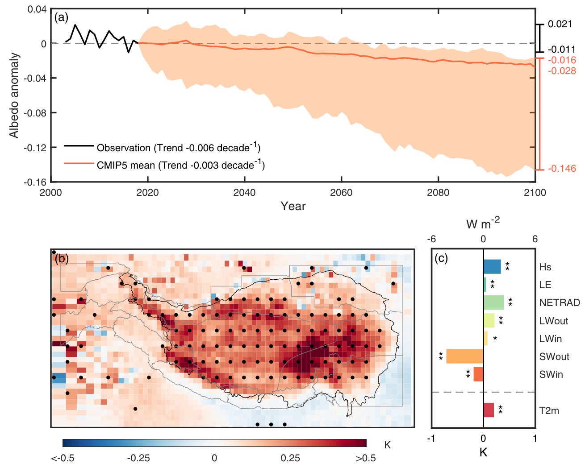
图1 ｜ 青藏高原（TP）反照率变化及反照率引起的局地气候变化。a TP反照率距平的时间序列。粗实黑线为2003-2018 CE期间的观测反照率距平，即由MODIS MCD43产品得到的年均反照率相对于其基准年（2018 CE）值的距平。粗实橙线和橙色阴影区分别代表CMIP5中35个全球气候模式（GCM）得到的未来（2018-2100 CE）预估反照率距平的加权平均值和范围。每个CMIP5 GCM的未来预估反照率距平为RCP8.5下年均反照率的5年滑动平均相对于其基准年（2018 CE）值的距平。粗实黑线和橙线的趋势分别约为−0.006 decade⁻¹（p = 0.19，Mann-Kendall检验）和约−0.003 decade⁻¹（p < 0.01，Mann-Kendall检验）。b 反照率引起的近地表气温（t2m）变化的空间分布。打点表示差异显著（p < 0.05，非参数Wilcoxon符号秩检验）。黑线为TP边界。灰线为RGI v6⁵⁷˒⁵⁸定义的13个二级分区的边界。有关这些分区的更多细节见补充表1。c TP内反照率引起的t2m及能量收支相关变量的变化。SWin、SWout、LWin、LWout、NETRAD、LE和Hs分别表示向下短波辐射、向上短波辐射、向下长波辐射、向上长波辐射、净辐射、潜热通量和感热通量。符号"**"表示在99%置信区间显著，"*"表示在95%置信区间显著。有关这些变量的更多细节见方法部分。
Fig. 1 | Changes of albedo and albedo-induced local climate in the Tibetan Plateau (TP). a Time series of albedo anomaly in the TP. The thick solid black line represents the albedo anomaly of observation during 2003-2018 CE, which is the annual mean albedo derived from the MODIS MCD43 product relative to its benchmark-year (2018 CE) value. The thick solid orange line and shaded orange area, respectively, represent the weighted average and ranges of future (2018-2100 CE) projection albedo anomaly derived from 35 global climate models (GCMs) in CMIP5. The future projection albedo anomaly derived from each CMIP5 GCM is the 5-year moving average of the annual mean albedo in RCP8.5 relative to its benchmark-year (2018 CE) value. Trends of the thick solid black and orange lines are about −0.006 decade−1 (p = 0.19, Mann-Kendall test) and about −0.003 decade−1 (p < 0.01, Mann-Kendall test), respectively. b The spatial pattern of the albedo-induced near-surface air temperature (t2m) changes. The stippling indicates a significant difference (p < 0.05, non-parametric Wilcoxon signed-rank test). The black line indicates the boundary of TP. The gray lines indicate the boundaries of the 13 second-order regions defined by the RGI v657,58. More details about these regions are shown in Supplementary Table 1. c The albedo-induced t2m and energy budget-related variables change in the TP. SWin, SWout, LWin, LWout, NETRAD, LE, and Hs, respectively, indicate the downward shortwave radiation, the upward shortwave radiation, the downward longwave radiation, the upward longwave radiation, the net radiation, the latent heat flux, and the sensible heat flux. The symbol "**" indicates the significance at the 99% confidence interval while "*" indicates the significance at the 95% confidence interval. More details about these variables are shown in the Methods.
在高排放情景下地表反照率降低（补充图1），模式模拟出TP近地表气温普遍升高（0.24 ± 0.13 K，以下均为区域平均 ± 标准差，图1b），其中高原内部（0.31 ± 0.08 K）和高原东南部（0.28 ± 0.17 K）增暖尤为显著。
With the decreased surface albedo (Supplementary Fig. 1) under the high-emission scenario, the model simulates a widespread increase of near-surface air temperature over the TP (0.24 ± 0.13 K, regional mean ± standard deviation hereafter, Fig. 1b), with notable warming in the inner TP (0.31 ± 0.08 K) and the southeast TP (0.28 ± 0.17 K).
通过考察地表能量收支各分量和AHS的变化（见方法部分），可以理解温度变化背后的物理机制。
The physical mechanism behind the temperature changes can be understood by examining the variation in different components of the surface energy budget and AHS (see Methods).
高排放情景下TP的地表变暗引起反射太阳辐射显著减少（−5.17 ± 3.16 W m⁻²）。
The surface darkening in the TP under the high-emission scenario induces a significant decrease in the reflected solar radiation (−5.17 ± 3.16 W m−2).
这一减少主要贡献了地表净辐射的增加（2.72 ± 1.55 W m⁻²），尽管它部分被减弱的向下短波辐射（−1.31 ± 1.88 W m⁻²）和净长波辐射（−1.15 ± 1.25 W m⁻²，图1c）所抵消。
This decline mainly contributes to an increase in net surface radiation (2.72 ± 1.55 W m−2), although it is partly offset by the reduced downwelling shortwave radiation (−1.31 ± 1.88 W m−2) and net longwave radiation (−1.15 ± 1.25 W m−2, Fig. 1c).
增加的地表净辐射被分配到感热（2.48 ± 1.30 W m⁻²）和潜热通量（0.23 ± 0.77 W m⁻²）中。
The increased net surface radiation is partitioned into sensible (2.48 ± 1.30 W m−2) and latent heat flux (0.23 ± 0.77 W m−2).
地表净辐射的这一增加，连同部分地区如高原东南部（1.86 ± 1.95 W m⁻²）和横断山（1.35 ± 5.28 W m⁻²）因凝结而增加的潜热释放，显著促成了TP的增暖（0.24 ± 0.13 K）和AHS的增强（2.97 ± 3.59 W m⁻²，9.9%）（图1b、c）。
Such an increase in net surface radiation, along with the increase of latent heat release due to condensation in some regions such as southeast TP (1.86 ± 1.95 W m−2) and Hengduan Shan (1.35 ± 5.28 W m−2), significantly contributes to the warming of the TP (0.24 ± 0.13 K) and the enhancement of AHS (2.97 ± 3.59 W m−2, 9.9%) (Fig. 1b, c).
与RCP8.5情景下本世纪末（2080-2100 CE）相对于2003-2018 CE期间预估的总增暖4.7 K和AHS增强4.5 W m⁻²相比，TP地表变暗单独即可解释TP温度升高的5.1%和AHS增强的66.0%（见方法部分）（补充图2a、b）。
Compared to the projected total warming of 4.7 K and enhanced AHS by 4.5 W m−2 between the end of this century (2080-2100 CE) and the period 2003-2018 CE under the RCP8.5 scenario, the surface darkening over the TP could alone account for an increase of 5.1% for temperature and 66.0% for AHS over the TP (see Methods) (Supplementary Fig. 2a, b).
高排放情景下TP预估的反照率下降还将使高原东部降水略有增加，如高原东南部（1.93 mm month⁻¹，2.5%）和横断山（1.40 mm month⁻¹，0.6%），而使高原西部降水减少，如喀喇昆仑（−2.27 mm month⁻¹，−3.6%）和兴都库什（−1.42 mm month⁻¹，−4.1%）（补充图3a）。
Projected albedo decline in the TP under a high-emission scenario would also slightly increase precipitation over the eastern TP, such as southeast TP (1.93 mm month−1, 2.5%) and Hengduan Shan (1.40 mm month−1, 0.6%) while decrease precipitation over the western TP such as Karakoram (−2.27 mm month−1, −3.6%) and Hindu Kush (−1.42 mm month−1, −4.1%) (Supplementary Fig. 3a).
TP降水变化的这一偶极型态源于局地对流有效位能（CAPE，高原东部：0.30–1.03 J kg⁻¹，1.0–4.7%；高原西部：−0.36至−0.09 J kg⁻¹，−3.4至−0.8%，补充图3b）和云量（高原东部：3.0–8.6 × 10⁻³，0.5–1.6%；高原西部：−7.9至−7.3 × 10⁻³，−2.3至−1.8%，补充图3c）的不同变化。
This dipole pattern of precipitation changes over the TP is due to different changes in local convective available potential energy (CAPE, eastern TP: 0.30–1.03 J kg−1, 1.0–4.7%; western TP: −0.36 to −0.09 J kg−1, −3.4 to −0.8%, Supplementary Fig. 3b) and cloudiness (eastern TP: 3.0–8.6 × 10−3, 0.5–1.6%; western TP: −7.9 to −7.3 × 10−3, −2.3 to −1.8%, Supplementary Fig. 3c).
TP地表变暗对ASM的影响
Impact of the TP surface darkening on the ASM
由于TP伸入对流层中层，这一覆盖整个高原的地表变暗显著加热大气（图1），从而在TP与海洋之间建立可能影响ASM的经向温度差¹⁹˒²³˒²⁴。
As the TP protrudes into the middle of the troposphere, this plateau-wide surface darkening significantly warms the atmosphere (Fig. 1), which can set up a meridional temperature difference between the TP and oceans that may affect the ASM19,23,24.
平衡态气候试验结果表明，对南亚而言，高排放情景下的TP变暗可使区域夏季风降水增加（1.25 mm month⁻¹，0.5%），尤其在印度次大陆季风核心区（ICR，12.48 mm month⁻¹，5.5%）（图2）。
Results of the equilibrium climate experiments show that, for South Asia, the TP darkening under the high-emission scenario could produce an increase in regional summer monsoon precipitation (1.25 mm month−1, 0.5%), especially in the Indian subcontinent core monsoon region (ICR, 12.48 mm month−1, 5.5%) (Fig. 2).
这种由反照率引起的季风降水变化可能源于大气环流的调节。
Such albedo-induced changes in monsoonal precipitation may be originated from the regulation of the atmospheric circulation.
地表变暗增强了TP作为"高架热泵"的作用²⁵，有利于局地热力对流（补充图4a），并进一步促使对流层上层形成反气旋异常（补充图4d）。
The surface darkening enhances the role of the TP as an "elevated heat pump"25, favoring the local thermal convection (Supplementary Fig. 4a) and further the formation of an anticyclonic anomaly in the upper troposphere (Supplementary Fig. 4d).
南亚高压（SAH）是北半球夏季亚洲大陆上空具有特征性的暖性高压系统（对流层上层行星尺度反气旋环流）²⁶˒²⁷，随后在TP上空增强（补充图4d），导致南亚上空出现强东风异常（补充图4b、c）。
The South Asian High (SAH), a characteristic thermal high-pressure system (planetary-scale anticyclonic circulation in the upper troposphere) over the Asian continent in boreal summer26,27, then becomes intensified over the TP (Supplementary Fig. 4d), resulting in the strong easterly wind anomaly over South Asia (Supplementary Fig. 4b, c).
这一由反照率引起的东风异常减弱了气候态的西风及与之相伴的来自阿拉伯海的水汽输送（补充图5）。
This albedo-induced easterly wind anomaly weakens the climatological westerly wind and associated humidity transport from the Arabian Sea (Supplementary Fig. 5).
但它同时将孟加拉湾及其周边地区的暖湿空气推向印度次大陆（补充图5），为南亚（尤其是ICR）提供了充足的水汽，从而增加区域季风降水（图3）。
But it simultaneously propels moist air from the Bay of Bengal and its surrounding regions to the Indian subcontinent (Supplementary Fig. 5), providing sufficient water vapor in South Asia, especially the ICR, and thus increasing regional monsoonal precipitation (Fig. 3).
需要注意的是，未来TP地表变暗导致的印度次大陆季风核心区降水增加（5.5%）略高于RCP8.5情景下2080-2100 CE期间相对于2003-2018 CE期间的增幅（4.2%）（见方法部分）（补充图2c、d）。
Note that the precipitation increases in the Indian subcontinent core monsoon region due to the future TP surface darkening (5.5%) are slightly higher than that (4.2%) between the period 2080-2100 CE and 2003-2018 CE under the RCP8.5 scenario (see Methods) (Supplementary Fig. 2c, d).
对东亚而言，高排放情景下的TP地表变暗可能使区域夏季风降水变化呈现"北增-中减-南增"的三极结构。
For East Asia, the TP surface darkening under the high-emission scenario may produce a "north increase-middle decrease-south increase" triple structure of regional summer monsoon precipitation changes.
具体而言，季风降水在华北（NC，−1.97 mm month⁻¹，−1.6%）减少，但在其以南地区增加，包括长江流域（YTR，3.91 mm month⁻¹，2.0%）和华南（SC，0.35 mm month⁻¹，0.2%），并在其以北地区即东北亚（4.57 mm month⁻¹，5.4%）增加。
In detail, monsoonal precipitation experiences a decline in North China (NC, −1.97 mm month−1, −1.6%), but an increase in its southern regions, including the Yangtze River Valley (YTR, 3.91 mm month−1, 2.0%) and South China (SC, 0.35 mm month−1, 0.2%), and its northern region, i.e., Northeast Asia (4.57 mm month−1, 5.4%).
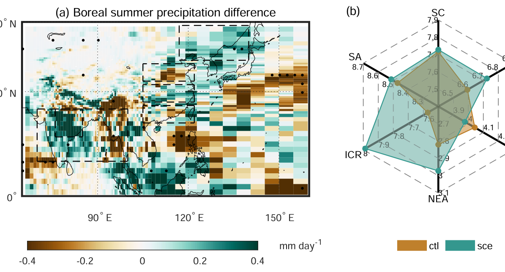
图2 ｜ 反照率引起的北半球夏季降水变化。a 反照率引起的东欧亚大陆北半球夏季降水变化的空间分布。打点表示差异显著（p < 0.05，非参数Wilcoxon符号秩检验）。六个子区域的边界——南亚（SA）、印度次大陆季风核心区（ICR）、东北亚（NEA）、华北（NC）、长江流域（YTR）和华南（SC）——以黑色虚线标出。这六个子区域的区域平均北半球夏季降水示于图(b)。雷达图中标尺的单位为mm day⁻¹。有关这些区域的更多细节见方法部分。
Fig. 2 | Albedo-induced boreal summer precipitation changes. a The spatial pattern of albedo-induced boreal summer precipitation changes in eastern Eurasia. The stippling indicates a significant difference (p < 0.05, non-parametric Wilcoxon signed-rank test). The boundaries of six subdivision regions, including South Asia (SA), the Indian subcontinent core monsoon region (ICR), Northeast Asia (NEA), North China (NC), the Yangtze River Valley (YTR), and South China (SC), are highlighted by black dashed lines. The regional averaged boreal summer precipitation in these six subdivision regions is shown in panel (b). The unit of the scale in the radar plot is mm day−1. More details about these regions are shown in the Methods.
这种由变暗引起的东亚季风降水三极结构将加剧区域性的"南涝北旱"（"南"指华南，"北"指华北）格局²˒²⁸˒²⁹。
Such darkening-induced triple structure of monsoonal precipitation in East Asia would exacerbate the regional "South Flood-North Drought" ("South" means South China and "North" means North China) pattern2,28,29.
具体而言，就华南与华北之间北半球夏季降水的差值而言，在RCP8.5情景下，"南涝北旱"格局到本世纪末（2080-2100 CE）相对于2003-2018 CE期间进一步增强19.0%，其中近六分之一的增强是由该情景下未来TP地表变暗造成的（见方法部分）（补充图2e、f）。
Specifically, in terms of the difference in boreal summer precipitation between South China and North China, the "South Flood-North Drought" pattern further increases by 19.0% by the end of this century (2080-2100 CE) compared to the period 2003-2018 CE under the RCP8.5 scenario, and nearly one-sixth of this increase is due to the future surface darkening over TP under this scenario (see Methods) (Supplementary Fig. 2e, f).
RCP8.5情景下预估变暗所造成的东亚季风降水变化三极结构，可归因于TP变暗引起的对流层中SAH和西太平洋副热带高压（WPSH）的增强（图3及补充图4）。
The triple structure of monsoonal precipitation changes in East Asia due to the projected darkening under the RCP8.5 scenario can be attributed to the strengthening of the SAH and the West Pacific Subtropical High (WPSH) in the troposphere due to the TP darkening (Fig. 3 and Supplementary Fig. 4).
反照率引起的SAH增强可通过罗斯贝波列的传播³¹˒³²使低层的WPSH向西北方向移动³⁰。
The albedo-induced enhancement of SAH could shift the lower-layer WPSH northwestward30 through the propagation of a Rossby wave train31,32.
具体而言，当SAH增强所激发的罗斯贝波沿西风急流向东传播时，在中国沿海形成一个准正压且静止的对流层上层高压脊，它进一步同时拉动SAH和WPSH，从而导致WPSH（SAH）向西北（向东）移动³³–³⁵。
Specifically, when Rossby waves triggered by the intensification of SAH propagate eastward along the westerly jet, a quasi-barotropic and stationary upper-tropospheric ridge over the coast of China is formed, which further pulls both the SAH and the WPSH, and thus leads to the northwestward (eastward) movement of WPSH (SAH)33–35.
这一向西北扩展的WPSH增强了东亚低层南风（补充图4b）³⁶，并将更多水汽从海洋输送到大陆内部（补充图5），从而增强NEA、YTR和SC的季风降水（图2和图3）。
This northwest-extended WPSH intensifies the low-level southerly winds in East Asia (Supplementary Fig. 4b)36 and transports more water vapor from the ocean into the interior of the continent (Supplementary Fig. 5), which enhances the monsoonal precipitation in NEA, the YTR, and SC (Figs. 2 and 3).
相比之下，反照率引起的华北偏北风异常（补充图4b、c）会阻碍由WPSH驱动的来自南方地区的暖湿气流，从而导致局地干旱（图2和图3）。
By contrast, the albedo-induced northerly wind anomaly in NC (Supplementary Fig. 4b, c) would hinder the moist air from the southern regions triggered by the WPSH, thus leading to local dryness (Figs. 2 and 3).
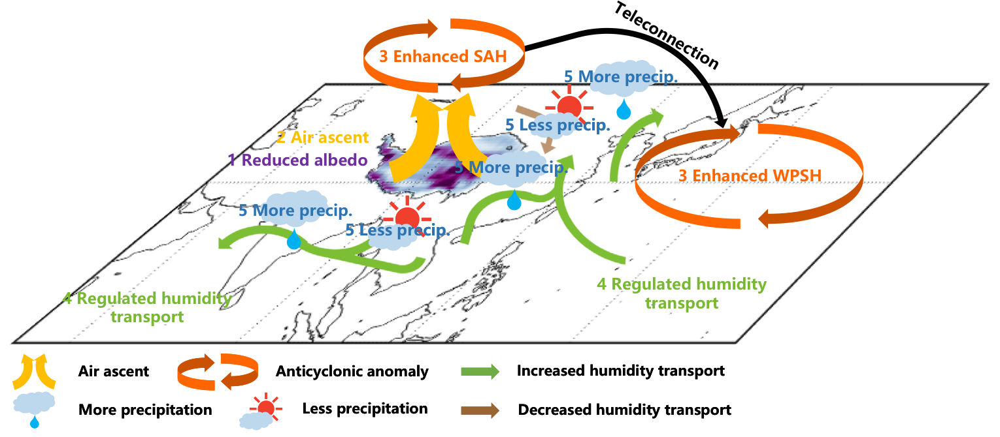
图3 ｜ 青藏高原（TP）地表变暗对亚洲夏季风影响的示意图。本图的底图取自补充图1。黑线为TP边界。TP反照率降低（第一步）调节局地能量收支，从而强化TP作为"高架热泵"的作用，使更多气块上升（第二步），并进一步通过罗斯贝波列³³–³⁵有利于大气反气旋异常（南亚高压，SAH）及其下游西太平洋副热带高压（WPSH）的形成（第三步）。一方面，对流层中增强的反气旋异常在南亚上空造成强东风异常，减弱了从阿拉伯海到南亚的气候态西风水汽输送，但同时将孟加拉湾及其周边地区的暖湿空气推向印度次大陆（第四步），从而增加降水（图中"precip."，第五步）。另一方面，WPSH的西北向移动增强了东亚的南风（第四步），将更多水汽从海洋输送到大陆内部，使东北亚、长江流域和华南降水增加（第五步）。相比之下，反照率引起的华北偏北风异常阻碍了由WPSH驱动的来自南方地区的暖湿气流（第四步），因而有利于局地干旱（第五步）。
Fig. 3 | Schematic diagram of the impact of the Tibetan Plateau (TP) surface darkening on the Asian Summer Monsoon. The base map of the figure is derived from Supplementary Fig. 1. The black line indicates the boundary of TP. Reduced albedo in the TP (step one) modulates the local energy budget and thus intensifies the role of TP as an "elevated heat pump", which ascends more air parcels (step two) and further favors the formation of the atmospheric anticyclonic anomaly (South Asian High, SAH) and the downstream West Pacific Subtropical High (WPSH) through the Rossby wave trains (step three)33–35. On the one hand, the intensified anticyclonic anomaly in the troposphere causes the strong easterly wind anomaly over South Asia, which weakens the climatological westerly humidity transport from the Arabian Sea to South Asia, but simultaneously propels moist air from the Bay of Bengal and its surrounding regions to the Indian subcontinent (step four) for the precipitation ("precip." in the figure, step five). On the other hand, the northwestward shift in the WPSH strengthens the southerly winds in East Asia (step four), which transports more water vapor from the ocean into the interior of the continent for precipitation in Northeast Asia, the Yangtze River Valley, and South China (step five). By contrast, the albedo-induced northerly wind anomaly in North China hinders the moist air from the southern regions triggered by the WPSH (step four), thus conducive to the local dryness (step five).
TP地表变暗对局地冰川的影响
Impact of the TP surface darkening on the local glaciers
冰川广泛分布于TP及其周边山地（补充表1）³⁷，对气候条件十分敏感³⁸。
Glaciers, widely distributed in the TP and its surrounding ranges (Supplementary Table 1)37, are sensitive to climate conditions38.
因此，反照率引起的增暖和降水变化将影响TP上的冰川。
The albedo-induced warming and precipitation changes would therefore impact glaciers over the TP.
利用LMDZOR中CTL和SCE模拟的气候（近地表气温和降水），我们用OGGM²²进行了两组瞬态模拟（分别称为CTL_t和SCE_t），以量化TP冰川对百年尺度气候的响应（见方法部分）。
Using the climate (near-surface air temperature and precipitation) simulated from CTL and SCE in LMDZOR, we perform two transient simulations (called the CTL_t and the SCE_t, respectively) with OGGM22, to quantify the response of TP glaciers to the climate on the centennial scale (see Methods).
百年尺度瞬态模拟结果表明，高排放情景下TP的地表变暗，使SCE_t末年模拟相对于CTL_t而言，在冰川体积（−6.9%，图4a）和冰川覆盖面积（−4.6%，补充图6a）两方面都造成冰川损失。
Results in the transient simulations at the centennial scale show that the surface darkening in the TP under the high-emission scenario induces a glacier loss in terms of both the glacier volume (−6.9%, Fig. 4a) and the glacierized area (−4.6%, Supplementary Fig. 6a) in the final-year simulation of SCE_t relative to that of CTL_t.
SCE_t与CTL_t之间TP冰川的这一由反照率引起的差异清晰可见（补充图7）。
This albedo-induced difference in the TP glaciers between SCE_t and CTL_t is clearly visible (Supplementary Fig. 7).
由于冰川响应滞后于变化中的气候³⁹˒⁴⁰，CTL_t和SCE_t中的TP冰川在瞬态模拟结束时均未达到平衡，这意味着反照率引起的冰川退缩可能在更长的时间尺度上持续。
Since the glacier response lags behind the changing climate39,40, the TP glaciers in both CTL_t and SCE_t do not reach equilibrium by the end of the transient simulations, suggesting that the albedo-induced glacier retreat may continue on a longer time scale.
为量化高排放情景下反照率变化对平衡态TP冰川的影响，我们进行了一组配对的5000年平衡态冰川模拟（分别称为CTL_e和SCE_e）（见方法部分）。
To quantify the impact of albedo changes under the high-emission scenario on the TP glaciers at the equilibrium, a paired 5000-year equilibrium glacier simulation (called the CTL_e and the SCE_e, respectively) is performed (see Methods).
尽管SCE_e中冰川体积的演变与CTL_e大体相似，但在RCP8.5情景下，TP的变暗最终导致SCE_e达到平衡时冰川体积更低（图4a）。
Although the evolution of glacier volume in SCE_e is generally similar to those in CTL_e, the darkening of the TP under the RCP8.5 scenario eventually leads to a lower glacier volume in SCE_e when reaching equilibrium (Fig. 4a).
具体而言，与CTL_e的冰川体积平衡阶段相比，SCE_e中将有25.2%的冰川体积消失（按SCE_e与CTL_e模拟的最后1000年平均值之差除以CTL_e的相应平均值计算），这一比例几乎是百年尺度瞬态模拟中反照率引起的退缩比例的近四倍（图4a），并最终导致TP冰川总体积平衡态损失3.7 × 10² km³（6.1%）。
Specifically, compared to the equilibrium stage of glacier volume in CTL_e, 25.2% of glacier volume will disappear in SCE_e (the difference between the simulated final 1000-year average of SCE_e and CTL_e divided by that of CTL_e), which is nearly four times as large as the proportion of albedo-induced shrinkage in the transient simulations at the centennial scale (Fig. 4a), and eventually leads to equilibrium loss of the total TP glacier volume by 3.7 × 102 km3 (6.1%).
此外，SCE_e相对于CTL_e的大量冰川损失也体现在平衡态冰川覆盖面积上（−17.9%，补充图6a）。
In addition, the substantial glacier loss in SCE_e relative to CTL_e can also be reflected in the equilibrium-state glacierized area (−17.9%, Supplementary Fig. 6a).
我们的结果表明，与百年尺度相比，高排放情景下的局地地表变暗在长时间尺度上可能导致TP及其周边山地出现更不可忽视的冰川减少。
Our results show that the local surface darkening under a high-emission scenario could lead to a more non-negligible reduction of glaciers in the TP and its surrounding ranges on a long-time scale compared with that in the centennial scale.
无论是百年尺度还是平衡态，反照率引起的冰川退缩在TP及其周边山地都存在显著的空间差异（图4及补充图6、7）。
Both the centennial-scale and equilibrium-state albedo-induced glacier shrinkage varies appreciably across the TP and its surrounding ranges (Fig. 4 and Supplementary Figs. 6 and 7).
这种冰损失在空间上高度可变的性质，可能归因于反照率引起的气候变化的季节与空间差异以及区域冰川状况。
This highly variable nature of ice losses in space may be attributed to the seasonal and spatial variations in albedo-induced climate change as well as the regional glacier regime.
尽管高原东南部在高排放情景下经受了地表变暗造成的显著增暖（0.28 K）（图1b），其冰川体积在百年尺度（−2.1%，补充图7a）和平衡态（−7.0%）（图4b）都保持相对稳定。
The glacier volume in the southeast TP, inspite of being subject to substantial warming (0.28 K) caused by the darkening of the surface under the high-emission scenario (Fig. 1b), remains relatively stable in both the centennial scale (−2.1%, Supplementary Fig. 7a) and the equilibrium state (−7.0%) (Fig. 4b).
这主要是因为局地反照率引起的增暖主要发生在冬季（0.76 K），此时LMDZOR的SCE中背景温度仍远低于0 °C，且冬季（12.7%）和春季（6.8%）增加的降水有利于冰川增长。
This is mainly because the local albedo-induced warming primarily occurs in winter (0.76 K) when the background temperature is still far below 0 °C in SCE of LMDZOR, and increased precipitation in winter (12.7%) and spring (6.8%) favors glacier growth.
类似的结果也出现在TP南部（图4b及补充图7a），包括东喜马拉雅（仅在平衡态：6.1%）和横断山（百年尺度：2.0%，平衡态：0.1%），这可能源于轻微增暖（东喜马拉雅：0.03 K，横断山：0.05 K）与冬季（横断山：20.1%）或春季（东喜马拉雅：3.0%）降水增加的共同作用。
Similar results can also be found in the south part of the TP (Fig. 4b and Supplementary Fig. 7a), including the east Himalaya (only in the equilibrium state: 6.1%) and the Hengduan Shan (centennial scale: 2.0%, equilibrium state: 0.1%), which may be due to the combination of the slight warming (east Himalaya: 0.03 K, Hengduan Shan: 0.05 K) and the increase in winter (Hengduan Shan: 20.1%) or spring (east Himalaya: 3.0%) precipitation.
相比之下，在RCP8.5情景的地表变暗条件下，TP西部和中部近地表气温相对显著的升高——包括高原内部（0.31 K）、西昆仑（0.23 K）、东昆仑（0.21 K）、西喜马拉雅（0.18 K）和喀喇昆仑（0.17 K）——将导致相应区域的冰川体积大幅退缩，无论在百年尺度（高原内部：−9.1%，西昆仑：−3.1%，东昆仑：−5.5%，西喜马拉雅：−12.6%，喀喇昆仑：−3.5%）还是平衡态（高原内部：−29.4%，西昆仑：−26.4%，东昆仑：−24.8%，西喜马拉雅：−50.3%，喀喇昆仑：−24.0%）（图4b及补充图7a）都是如此。
In contrast, the relatively substantial increase of near-surface air temperature in the west and central part of the TP, including the inner TP (0.31 K), the west Kun Lun (0.23 K), the east Kun Lun (0.21 K), the west Himalaya (0.18 K) and the Karakoram (0.17 K), under the surface darkening conditions of the RCP8.5 scenario would lead to a high glacier volume shrinkage in the corresponding regions, in both the centennial scale (Inner TP: −9.1%, west Kun Lun: −3.1%, east Kun Lun: −5.5%, west Himalaya: −12.6%, Karakoram: −3.5%) and the equilibrium state (Inner TP: −29.4%, west Kun Lun: −26.4%, east Kun Lun: −24.8%, west Himalaya: −50.3%, Karakoram: −24.0%) (Fig. 4b and Supplementary Fig. 7a).
地表变暗引起的类似大幅冰川体积退缩也发生在TP西南部和西北部，如中喜马拉雅（百年尺度：−15.5%，平衡态：−44.8%）、兴都库什（百年尺度：−9.4%，平衡态：−35.2%）、帕米尔（百年尺度：−9.2%，平衡态：−22.7%）和吉萨尔-阿赖（百年尺度：−10.9%，平衡态：−22.3%）。
Similar substantial shrinkage in glacier volume due to surface darkening also occurs in the southwest and northwest parts of the TP, such as the central Himalaya (centennial scale: −15.5%, equilibrium state: −44.8%), the Hindu Kush (centennial scale: −9.4%, equilibrium state: −35.2%), the Pamir (centennial scale: −9.2%, equilibrium state: −22.7%) and the Hissar Alay (centennial scale: −10.9%, equilibrium state: −22.3%).
这些地区只经历了较小的反照率引起的增暖（中喜马拉雅：0.05 K，兴都库什：0.13 K，帕米尔：0.12 K，吉萨尔-阿赖：0.11 K），但冬季（中喜马拉雅：−15.6%）或春季（兴都库什：−8.1%，帕米尔：−6.2%，吉萨尔-阿赖：−4.5%）降水大幅减少。
These regions only experience smaller albedo-induced warming (central Himalaya: 0.05 K, Hindu Kush: 0.13 K, Pamir: 0.12 K, Hissar Alay: 0.11 K) but a substantial decrease in winter (central Himalaya: −15.6%,) or spring (Hindu Kush: −8.1%, Pamir −6.2%, Hissar Alay: −4.5%) precipitation.
唯一的例外是祁连山，那里局地的变暗条件引起稳定的气候变化（近地表气温：0.08 K，降水：0.1%），但冰川体积退缩相对较大（百年尺度：−13.9%，平衡态：−29.6%，图4b及补充图7a）。
The only exception is the Qilian Shan, where local darkening conditions cause stable climate changes (near-surface air temperature: 0.08 K, precipitation: 0.1%) but a relatively high retreat in glacier volume (centennial scale: −13.9%, equilibrium state: −29.6%, Fig. 4b and Supplementary Fig. 7a).
这可能源于祁连山区域冰川的特有属性——大多数冰川面积不足1 km²⁴¹，与较大的冰川相比对增暖表现出更强的敏感性⁴²。
This may be due to the particular characteristics of the regional glaciers in the Qilian Shan, which are mostly less than 1 km2 in size41, and show stronger sensitivity to warming compared with larger glaciers42.
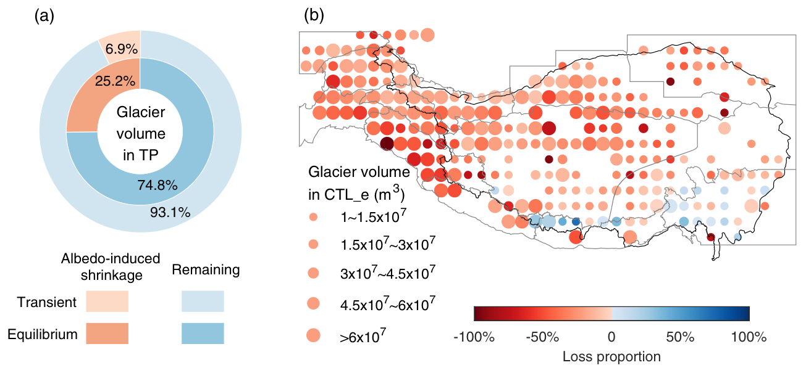
图4 ｜ 青藏高原（TP）及其周边山地反照率引起的冰川体积退缩。a 百年尺度（外环，来自瞬态模拟）和平衡态（内环，来自平衡态模拟）反照率引起的冰川体积退缩比例与剩余比例。b CTL_e中平衡态冰川体积的空间分布及SCE_e相对于CTL_e的损失比例。损失比例按SCE_e与CTL_e最后1000年冰川体积之差除以CTL_e的相应值计算。黑线为TP边界。灰线为RGI v6⁵⁷˒⁵⁸定义的13个二级分区的边界。有关这些分区的更多细节见补充表1。每个圆圈的大小代表CTL_e中1°空间分辨率上的平衡态冰川体积，而每个圆圈的颜色代表平衡态下SCE_e相对于CTL_e的冰川体积平均损失比例。冰川体积已基于OGGM第一年模拟值与文献71估计值的比例进行了升尺度换算（见方法部分）。
Fig. 4 | The albedo-induced shrinkage of glacier volume in the Tibetan Plateau (TP) and its surrounding ranges. a The proportion of albedo-induced shrinkage of glacier volume and the remaining one on the centennial scale (outer ring, from the transient simulations) and at the equilibrium state (inner ring, from the equilibrium simulations). b The spatial pattern of equilibrium-state glacier volume in CTL_e and its loss proportion of SCE_e relative to CTL_e. The loss proportion is computed as the difference between the final 1000-year glacier volume of SCE_e and CTL_e divided by that of CTL_e. The black line indicates the boundary of TP. The gray lines indicate the boundaries of the 13 second-order regions defined by the RGI v657,58. More details about these regions are shown in Supplementary Table 1. The size of each circle represents the equilibrium-state glacier volume at a spatial resolution of 1° in CTL_e, while the color of each circle represents the mean loss proportion of glacier volume in SCE_e relative to CTL_e under the equilibrium state. The glacier volume has been upscaled based on the ratio of the first-year simulations in OGGM and the estimated values from ref. 71 (see Methods).
讨论
Discussion
通过使用耦合陆-气全球气候模式和冰川模式，我们表明高排放情景下TP预估反照率的下降（即变暗趋势）会使局地近地表大气增暖，并增强TP的热力强迫。
By using a coupled land-atmosphere global climate model and a glacier model, we show that the decline in projected albedo over the TP (i.e., a darkening trend) under a high-emission scenario could warm the local near-surface atmosphere and strengthen the thermodynamic forcing of the TP.
这些由反照率引起的局地变化将阻碍南亚上空的风和水汽输送，同时增强东亚的偏南风，进而重新分配ASM影响区的季风降水。
These albedo-induced local changes would hinder the wind and humidity transport over South Asia while augmenting the southerly winds in East Asia, and further redistributing the monsoonal precipitation over the ASM-affected regions.
这种TP预估地表变暗对ASM的遥相关影响弱于其年际变率（见方法部分），但我们的结果表明季风平均态发生了移动，这对周边地区的水文平衡可能十分重要。
Such tele-connected impacts of the projected surface darkening over the TP on the ASM are weaker than their interannual variabilities (see Methods), but our results indicate shifts in the monsoon mean state, which could be important for the hydrological balance of the surrounding regions.
例如，印度次大陆和华北目前正经历夏季变干的趋势，而在华南，夏季降水过多并造成频繁的洪涝²⁸˒²⁹˒⁴³。
For example, the Indian subcontinent and North China are currently suffering from a summer drying trend, while in South China, summer precipitation is excessive and causes frequent flooding28,29,43.
在我们的预估中，仅TP反照率降低这一项，就可能使当前的"南涝北旱"和"西旱东涝"（"西"指南亚，"东"指华南）格局部分加剧（东亚）或缓解（南亚）。
These current "South Flood-North Drought" and "West Drought-East Flood" ("West" means South Asia and "East" means South China) patterns may be partly exacerbated (East Asia) or alleviated (South Asia) in our projections with sole decreased albedo over the TP.
需要注意的是，当前的TP地表变暗不足以抵消过去几十年ASM降水的下降，后者主要归因于人为气溶胶的增加⁴⁴。
Note that the current TP surface darkening was not enough to offset the decline in ASM precipitation over the last decades, which is mainly due to increasing anthropogenic aerosols44.
然而，预估的TP地表变暗，连同温室气体排放的增加和人为气溶胶排放的相应减少，最终将促使亚洲季风降水恢复和增强⁴⁴˒⁴⁵。
While, the projected surface darkening over the TP, together with an increase in greenhouse gas emissions and a concomitant reduction in anthropogenic aerosol emissions, would ultimately lead to a revival and enhancement of Asian monsoon precipitation44,45.
我们的研究进一步量化了未来增暖情景下TP地表变暗的局地与遥相关气候影响。
The local and tele-connected climatic impacts of surface darkening over the TP under the future warming scenario are further quantified in our study.
此外，通过将反照率引起的气候变化与未来预估的气候变化相比较，我们的研究发现TP反照率变化将对局地增暖和AHS增强，以及印度次大陆季风核心区降水增加和东亚"南涝北旱"格局做出实质性贡献。
In addition, by comparing albedo-induced changes in climate to projected climate changes in the future, our study finds the TP albedo changes would make substantial contributions to the local warming and AHS enhancement, as well as the precipitation increases in the Indian subcontinent core monsoon region and "South Flood-North Drought" pattern in East Asia.
这一比较有助于在更暖的世界中分离出TP反照率变化对局地和远程气候系统的贡献。
This comparison could help isolate the contribution of TP albedo changes to local and remote climate systems in a warmer world.
高排放情景下TP的变暗还将导致TP及其周边山地的冰川退缩。
The darkening of the TP under a high-emission scenario would also lead to glacier retreat over the TP and its surrounding ranges.
考虑到文献46模拟的RCP8.5情景下本世纪末预估的冰川损失分别为7.1 × 10⁴ ± 1.3 × 10⁴ km²（面积）和6.2 × 10³ ± 1.1 × 10³ km³（体积）（见方法部分），这种由反照率引起的冰川退缩在百年尺度上相对较小但并非可忽略（面积：4.2 × 10³ ± 1.0 × 10³ km²，即5.9% ± 2.5%；体积：4.5 × 10² ± 54 km³，即7.1% ± 1.3%）（补充图7）。
This albedo-induced glacier retreat is relatively minor though not negligible (area: 4.2 × 103 ± 1.0 × 103 km2 or 5.9% ± 2.5%, volume: 4.5 × 102 ± 54 km3 or 7.1% ± 1.3%) on the centennial scale (Supplementary Fig. 7), given that the projected glacier loss by the end of this century under the RCP8.5 scenario simulated by ref. 46 is respectively 7.1 × 104 ± 1.3 × 104 km2 (area) and 6.2 × 103 ± 1.1 × 103 km3 (volume) (see Methods).
然而，由反照率降低造成的冰川损失比例将随时间进一步增大，并在长期变得更加不可忽视。
However, the proportion of glacier loss due to the albedo reduction will further increase over time and becomes more non-negligible in the long term.
这种由反照率引起的冰川退缩在各区域间差异显著，TP西部损失比例高，TP东部损失比例小。
Such albedo-induced glacier retreat varies considerably across regions, with a high loss proportion in the western TP and a minor one in the eastern TP.
但这种冰川退缩的空间型态并不总与预估的TP反照率下降的空间型态一致，这表明反照率对冰川的影响并非严格的局地响应，也可以体现在更大的尺度上（例如区域尺度，补充图8）。
But the spatial pattern of such glacier retreat is not always consistent with that of the projected TP albedo decline, suggesting that the impact of albedo on glaciers is not a strict local response, and can also be embodied at a larger scale (e.g., regional scale, Supplementary Fig. 8).
总体而言，我们的研究结果强调了在高排放情景下TP变暗对局地及遥远亚洲季风区气候系统和水文平衡的关键影响。
Overall, our findings underscore the critical impacts of the TP darkening on the climate system and hydrological balances in local and remote Asian monsoon regions under a high-emission scenario.
对预估TP变暗的气候与冰川学影响的定量理解的改进，将有助于为以下政策提供依据：降低水文相关极端事件风险的政策、兼顾生态系统与人类需求的更优淡水资源配置策略，以及TP和ASM影响国家的长期气候政策与可持续发展。
Improved quantitative understanding of the climatic and glaciological impacts of the projected TP darkening will help inform policies on alleviating the risk of hydrological-related extremes, better freshwater allocation strategies for both ecosystem and humanity usage, and long-term climatic policies and sustainable development over the TP and in the ASM-affected countries.
方法
Methods
模式描述
Model description
在本研究中，变暗TP的气候效应通过被称为LMDZOR的耦合陆-气全球气候模式进行研究，该模式是IPSL-CM的组成部分²¹˒⁴⁷。
In this study, the climatic effect of the darkening TP was investigated by a coupled land-atmosphere global climate model so-called the LMDZOR, which is a component of the IPSL-CM21,47.
此处使用的LMDZOR模式分量包括大气模块——具有可变分辨率能力的气象动力学实验室大气环流模式（LMDZ，第5版，v2076），以及陆面分量——动态生态系统碳与水文组织模型（ORCHIDEE，1.9.5版，v3035）。
The model components of LMDZOR used here include the atmospheric module, the Laboratoire de Météorologie Dynamique atmospheric general circulation model with zoomed capability (LMDZ, version 5, v2076), and the land-surface component, the ORganizing Carbon and Hydrology In Dynamics EcosystEms (ORCHIDEE, version 1.9.5, v3035).
LMDZ是一个先进的大气环流模式，包含控制大气的相关动力和物理过程⁴⁸˒⁴⁹。
LMDZ is a state-of-the-art atmospheric general circulation model including relevant dynamical and physical processes governing the atmosphere48,49.
ORCHIDEE是一个先进的陆地生态系统模型，模拟地表能量平衡以及土壤和植被中的水循环，同时还考虑陆地碳循环⁵⁰。
ORCHIDEE is an advanced terrestrial ecosystem model that simulates surface energy balance and water cycles of soil and vegetation and also considers the terrestrial carbon cycle50.
在本研究中，我们禁用了碳循环模块，因为我们主要关注TP反照率对地表能量平衡和水循环的影响。
In this study, we disabled the carbon cycle module as we primarily focused on the TP albedo effects on the surface energy balance and the water cycle.
我们通过实现一个读取外部指定短波地表反照率（见下文"试验设计"小节）作为边界条件的小模块，有意跳过了地表反照率的交互式计算。
We intentionally skipped the interactive calculation of land surface albedo by implementing a small module reading the external prescribed shortwave land surface albedo (see Experimental design section below) as boundary conditions.
观测的海表温度（SST）和海冰（SIC）也被指定为LMDZOR边界条件的一部分。
Observational sea-surface temperature (SST) and sea-ice (SIC) were also prescribed as part of the boundary conditions of LMDZOR.
LMDZOR采用了不规则的水平网格。
An irregular horizontal grid was applied in LMDZOR.
在TP及其周边地区（以33°N、88°E为中心），空间分辨率达到约0.5° × 0.5°。
Over the TP and the surrounding regions (centered at 33°N, 88°E), spatial resolution reaches about 0.5° × 0.5°.
在感兴趣区域之外，空间分辨率逐渐降低到5° × 1.5°（补充图9）。
Outside the region of interest, the spatial resolution gradually decreases down to 5° × 1.5° (Supplementary Fig. 9).
这种不规则水平网格既通过提高空间分辨率改善了TP地形复杂性的模拟，又兼顾了随之增加的模式不稳定性。
Such an irregular horizontal grid reconciles an improved simulation of topographic complexity over the TP due to an increase in spatial resolution with the corresponding increase in model instability.
然而，0.5° × 0.5°的空间分辨率对于准确刻画那些受地形复杂性强烈影响的TP陆面过程（例如文献51）而言仍可能过粗。
However, the spatial resolution of 0.5° × 0.5° can still be too coarse to accurately mimic those TP land surface processes that are strongly influenced by topographic complexity (e.g., ref. 51).
在加密区域的边缘，LMDZOR可以保证大气中水汽、能量和动量的自由交换。
At the edge of the zoomed area, LMDZOR can ensure the free exchange of atmospheric water, energy, and momentum.
以往研究已对LMDZOR模拟东亚区域气候的高可靠性进行了严格评估和展示⁵²˒⁵³。
Previous studies have rigorously evaluated and shown the high reliability of LMDZOR in simulating regional climate in East Asia52,53.
在本研究中，我们进一步通过将CTL的结果与五种不同的基于观测和再分析的数据集进行比较，验证了LMDZOR模拟东欧亚大陆和西太平洋上空年及北半球夏季（5月至9月）水文变量与北半球夏季大气环流空间型态的能力（见补充信息中的"LMDZOR评估"小节及补充图10、11）。
In this study, we further verified the capacity of LMDZOR for simulating the spatial patterns of annual and boreal summer (from May to September) hydrological variables and boreal summer atmospheric circulation over eastern Eurasia and the western Pacific by comparing results in CTL against five different observation-based and reanalysis datasets (see LMDZOR evaluation subsection and Supplementary Figs. 10 and 11 in Supplementary Information).
在本研究中，我们使用OGGM 1.5.3版本来估算地表变暗对TP及其周边山地冰川的影响²²。
Here we used the OGGM version 1.5.3 to estimate the effects of surface darkening on glaciers over the TP and the surrounding ranges in this study22.
OGGM是一个模块化的开源建模框架，采用以冰川为中心的方法模拟过去和未来的冰川物质平衡及其演变²²。
OGGM is a modular open-source modeling framework that uses a glacier-centric approach for the simulation of past and future glacier mass balance and its evolution22.
在本研究中，基本沿用了OGGM的默认设置，包括：使用高程带流线⁵⁴；用于计算月物质平衡的温度指数模型⁵⁵；用于估算冰川厚度和体积的冰川床反演（受文献56启发）；以及用于模拟冰川动力学的浅冰近似²²。
In this study, the default set-up of OGGM, including the use of elevation band flow-lines54; the temperature index model55, which was used to calculate the monthly mass balance; the glacier bed inversion (inspired by ref. 56) which was used to estimate the glacier thickness and volume; and the shallow ice approximation22 which was used to simulate the glacier dynamics, has largely been followed.
TP及其周边山地所有冰川的轮廓——包括伦道夫冰川编目第6版（RGI v6）⁵⁷˒⁵⁸提供的13个二级分区（补充表1）——以及取自2010年全球多分辨率地形高程数据（GMTED2010）的这些冰川的地形，被用作在OGGM中初始化每条冰川的地理输入数据。
The outlines of all glaciers in the TP and its surrounding ranges, which included 13 second-order regions provided by Randolph Glacier Inventory version 6 (RGI v6)57,58 (Supplementary Table 1), and the topography of these glaciers obtained from The Global Multi-resolution Terrain Elevation Data 2010 (GMTED2010), were used as the geographical input data to initialize each glacier in OGGM.
OGGM中物质平衡模型的参数已通过自动校准程序进行了校准，该程序利用了来自文献59的大地测量物质平衡数据和预处理的气候研究单元（CRU）温度与降水数据²²。
The parameters of the mass balance model in OGGM have been calibrated through the automated calibration procedure, making use of the geodetic mass-balance data from ref. 59 and pre-processed climatic research unit (CRU) temperature and precipitation22.
在CRU气候数据预处理过程中，利用delta方法（例如文献62）将源自CRU时间序列（TS）⁶⁰的温度和降水降尺度到CRU气候态（CL）⁶¹。
During the CRU climate data pre-processing procedure, the temperature and precipitation derived from the CRU time series (TS)60 were downscaled to the CRU climatology (CL)61 with the delta method (e.g., ref. 62).
该方法首先计算CRU TS相对于其参考气候期（两个气候数据集的重叠部分）的delta值，然后将这些delta值应用于CRU CL，以获得降尺度的气候数据。
This method first computed the deltas of CRU TS relative to its reference climate period (the overlapping part between two climate datasets), then applied these deltas to the CRU CL to obtain the downscaled climate data.
预处理后的CRU气候数据将进一步用于降尺度我们试验的气候强迫数据（见下文"试验设计"小节）。
The pre-processed CRU climate data would further be used to downscale the climate forcing data for our experiments (see Experimental design section below).
以往研究表明，OGGM成功应用于探索TP柯西河流域冰川物质平衡、体积和面积的未来变化⁶³。
A previous study showed that OGGM was successful in exploring future changes in mass balance, volume, and area of glaciers in the Koshi River basin of the TP63.
我们进一步通过将2000-2016 CE期间TP及其周边山地模拟的冰川变化与以往结果进行比较，评估了上述OGGM设置（见补充信息中的"OGGM评估"小节及补充图12–14）。
We further evaluated the above set-up of OGGM by comparing the simulated glacier changes in the TP and its surrounding ranges over 2000-2016 CE with previous results (see OGGM evaluation subsection and Supplementary Figs. 12–14 in Supplementary Information).
试验设计
Experimental design
使用LMDZOR进行了两组平衡态试验。（I）控制试验（CTL）是当前反照率试验，由本世纪15年期间（2003-2018 CE）来自中分辨率成像光谱仪（MODIS）MCD43产品⁶⁴的平均观测气候态地表反照率驱动。
Two equilibrium experiments were performed using LMDZOR. (I) The control experiment (CTL) is the current albedo experiment, forced by observed climatological surface albedo averaged over a 15-year period of this century (2003-2018 CE) from the Moderate Resolution Imaging Spectroradiometer (MODIS) MCD43 product64.
按照文献65的方法，将空间分辨率为500 m × 500 m的原始反照率数据聚合到0.5° × 0.5°，以匹配模式网格。
The original albedo data at a spatial resolution of 500 m × 500 m was aggregated into 0.5° × 0.5° following ref. 65 to fit the model grid.
LMDZOR中CTL的其他输入包括：同期（2003-2018 CE）的观测SST和SIC平均值（取自模式比较计划输入数据集（input4MIPs））、固定的全球大气CO₂数据（390 ppm），以及由"陆地-大气净碳交换趋势"项目（TRENDY）的瞬态模拟估计的植被功能型（PFT）图，PFT和叶面积指数（LAI）取自MODIS MCD15产品。
Other input for CTL in LMDZOR included the average of the same period (2003-2018 CE) observational SST and SIC derived from the input datasets for Model Intercomparison Projects (input4MIPs), fixed global atmospheric CO2 data (390 ppm) and the plant functional types (PFT) maps estimated from transient modeling in the project "Trends in net land-atmosphere carbon exchange" (TRENDY), the PFT, and the leaf area index (LAI) obtained from MODIS MCD15 product.
（II）SCE是未来TP反照率情景试验，其下边界条件（SST和SIC）、辐射强迫（CO₂）和植被动态（PFT和LAI）与CTL完全相同，但反照率图不同。
(II) The SCE is the future TP albedo SCE, prescribed with identical lower-boundary conditions (SST and SIC), radiative forcing (CO2), and plant dynamics (PFT and LAI) with CTL, but a different albedo map.
与以往施加TP地表反照率空间均匀减半的理想化扰动试验（例如文献31、66）不同，我们模拟中使用的反照率图考虑了未来更暖背景下TP地表反照率变化的空间非均匀性。
In contrast to previously perturbed idealized surface albedo experiments, which imposed a spatially-uniform halving of the surface albedo over the TP (e.g., refs. 31, 66), the albedo map used in our simulation considers the spatial heterogeneity in surface albedo changes over the TP in a warmer future.
具体而言，我们首先由一组在历史条件（本研究中为historical，2003-2005 CE）和高排放情景（本研究中为RCP8.5，2006-2100 CE）下运行的GCM集合，生成经偏差校正的地表反照率预估。
Specifically, we first generated bias-adjusted surface albedo projection from an ensemble of GCMs running under historical conditions (historical, 2003-2005 CE in the study) and a high-emission scenario (RCP8.5, 2006-2100 CE in the study).
在所有RCP情景中，RCP8.5情景与2005至2020 CE期间历史累积CO₂排放总量最为吻合（误差在1%以内）⁶⁷，因此可被视为在当前政策下探索未来气候风险的一个有用情景⁶⁷。
Among all RCP scenarios, the RCP8.5 scenario agrees most closely (within 1%) with the historical total cumulative CO2 emissions during the period from 2005 to 2020 CE67, and can therefore be considered a useful scenario to explore climate risks in the future under current policies67.
此外，使用最高的温室气体排放情景并不会减轻反照率降低的严重程度（补充图15）及其对气候和冰川的相关风险，从而保持政府和科学界后续评估的准确性。
Moreover, the use of the highest GHG emission scenario would not lessen the severity of albedo reduction (Supplementary Fig. 15) and associated risk on climate and glaciers, thus keeping the accurate subsequent assessment by governments and the scientific community.
然后，将多模式地表反照率加权平均值在本世纪末（2080-2100 CE）与2003-2018 CE期间之间的相对变化叠加到CTL的地表反照率图上，但仅限于TP地区（补充图1）。
Then, the relative changes of the weighted average of multi-model surface albedo between the end of this century (2080-2100 CE) and the period 2003-2018 CE were added to the surface albedo map of CTL, but only over the TP region (Supplementary Fig. 1).
我们使用贝叶斯模型平均（BMA）为每个GCM分配模式权重。
We used the Bayesian model averaging (BMA) to assign model weights for each GCM.
BMA旨在通过为每个GCM分配一个权重——即在给定观测数据下该模式为"真实"模式的概率⁶⁸——来抑制拟合不佳的模式并提升高技能模式，该方法已被广泛用于校准气候预估集合（例如文献69、70）。
The BMA is aimed at abating poorly fitting models and elevating high-skilled models through assigning each GCM a weight which is the probability that the model is a "true" model given the observation data68, and has been widely used to calibrate the ensembles of climate projection (e.g., refs. 69, 70).
我们根据每个GCM在历史和RCP8.5情景下再现2003-2018 CE期间TP观测地表反照率空间变率的能力，计算了各GCM的BMA最优权重（详见补充信息中的"反照率评估"小节及补充图16）。
We calculated BMA optimal weights for each GCM under the historical and RCP8.5 scenarios based on their ability in reproducing the spatial variability of observed surface albedo over the TP during the period 2003-2018 CE (see details in the Albedo evaluation subsection and Supplementary Fig. 16 in Supplementary Information).
需要注意的是，本研究使用的来自高排放情景（RCP8.5）的地表反照率未来预估可能忽略了对自然变率的考虑。
Note that the future projection of surface albedo from a high-emission scenario (RCP8.5) used in this study may ignore the consideration of natural variability.
由此得到的新反照率图被指定到LMDZOR中以驱动SCE。
The resultant new albedo map was prescribed into LMDZOR to drive SCE.
LMDZOR中的CTL和SCE均被瞬时施加反照率（分别为当前和未来反照率图），并运行99年以使模拟达到平衡态。
Both CTL and SCE in LMDZOR were instantaneously imposed of albedo (current and future albedo maps, respectively), and were run for 99 years to enable the simulations to reach an equilibrium state.
模拟的最后80年用于进一步分析。
The last 80 years of the simulations were used for further analysis.
基于OGGM，我们进一步进行了配对的瞬态（CTL_t和SCE_t）与平衡态（CTL_e和SCE_e）模拟，分别估算冰川对反照率引起的气候变化在百年尺度和平衡态下的响应。
Based on OGGM, we further performed the paired transient (the CTL_t and the SCE_t) and equilibrium (the CTL_e and the SCE_e) simulations, to respectively estimate the centennial-scale and equilibrium-state response of glaciers to the albedo-induced climate changes.
所有模拟从相同的初始化开始，但采用不同的气候强迫（近地表气温和降水）驱动。
All the simulations started from the same initialization but were forced with different climate forcing (near-surface air temperature and precipitation).
在冰川模拟中，用于驱动模式的气候强迫，是利用OGGM预处理的CRU气候数据⁶⁰˒⁶¹通过delta方法（以2003-2018 CE期间为参考气候期）²²降尺度得到的（见上文"模式描述"小节）。
In the glacier simulations, the climate forcing, which was used to drive the model, was downscaled by the OGGM pre-processed CRU climate data60,61 using the delta method (the period 2003-2018 CE was used as the reference climate period)22 (see Model description section above).
对于CTL_t和CTL_e，气候强迫来自CTL降尺度后的近地表气温和降水。
For CTL_t and CTL_e, the climate forcing was derived from the downscaled near-surface air temperature and precipitation of CTL.
SCE的气候数据也采用与CTL气候数据相同的校正程序进行降尺度，以驱动SCE_t和SCE_e模拟。
The climate data from SCE was also downscaled using the same correction procedure as was applied to the climate data of CTL to drive SCE_t and SCE_e simulations.
因此，CTL与SCE之间的气候差异被完好地保留在CTL_t（CTL_e）和SCE_t（SCE_e）模拟的气候强迫中。
Thereby, the difference in the climate between CTL and SCE is well preserved in the climate forcing of CTL_t (CTL_e) and SCE_t (SCE_e) simulations.
两组瞬态模拟（CTL_t和SCE_t）均运行99年，仅最后一年的结果用于进一步分析。
Both transient simulations (CTL_t and SCE_t) were run for 99 years, and only the results from the last year were used for further analysis.
对于5000年平衡态模拟，从CTL和SCE预处理后的气候输出中随机抽取最后79年、共5000次，分别生成驱动CTL_e和SCE_e的气候强迫时间序列。
For the 5000-year equilibrium simulations, the final 79 years of the pre-processed climate outputs from CTL and SCE were randomly selected 5000 times to generate the TS of the climate forcing to CTL_e and SCE_e, respectively.
仅平衡态模拟的最后1000年结果用于分析。
Only the final 1000-year results of the equilibrium simulations were used for analysis.
分析
Analysis
除地表反照率外，在本研究中我们还生成了历史（本研究中为2003-2005 CE）和RCP8.5情景（本研究中为2006-2100 CE）下其他气候变量——包括温度、降水和AHS（式2）——的CMIP5 GCM加权平均值。
Besides the surface albedo, in this study, we also generated the weighted average of CMIP5 GCMs for other climatic variables, including temperature, precipitation, and AHS (Eq. 2) under the historical (2003-2005 CE in this study) and RCP8.5 scenario (2006-2100 CE in the study).
每个GCM的权重与生成TP地表反照率未来预估加权平均值时所用的权重相同。
The weight of each GCM was the same as that used in generating the weighted average of future TP surface albedo.
我们进一步估计了本世纪末（2080-2100 CE）与2003-2018 CE期间之间气候变量的预估变化，并将其与仅由地表变暗引起的气候变化进行比较，以评估在RCP8.5情景下TP地表变暗对未来气候变化的贡献。
We further estimated the projected changes of climatic variables between the end of this century (2080-2100 CE) and the period 2003-2018 CE and compared them with the only surface darkening-induced climate change, so as to estimate the contribution of TP surface darkening to future climate change under RCP8.5 scenario.
本研究中由地表变暗引起的气候变化按SCE与CTL最后80年平均输出之差计算。
The surface darkening-induced climate change in this study was calculated as the difference of the final 80-year averaged outputs between SCE and CTL.
进一步对每一对80年模拟进行非参数Wilcoxon符号秩检验，以评估其差异是否显著。
The non-parametric Wilcoxon signed-rank test was further performed for each pair of these 80-year simulations to evaluate whether their difference was significant.
为估算百年尺度上由反照率引起的冰川变化，我们计算了SCE_t与CTL_t末年结果之间冰川属性（体积和面积）的差值。
To estimate the albedo-induced glacier changes on the centennial scale, we computed the difference in glacier properties (volume and area) between last year's results of SCE_t and CTL_t.
类似地，SCE_e与CTL_e最后1000年平均结果之间冰川属性的差值被用来表征平衡态下由反照率引起的冰川变化。
Similarly, the difference in glacier properties between the final 1000-year-average results of SCE_e and CTL_e was used to represent the albedo-induced changes in glaciers at the equilibrium state.
由于一些冰川（占总冰川面积的16%和总冰川体积的13%）未能被OGGM很好地刻画，我们随后通过缩放因子对冰川体积和面积进行了升尺度换算。
Since some glaciers (contributing to 16% of the total glacier area and 13% of total glacier volume) were not well captured by OGGM, we then upscaled the glacier volume and area through the scaling factor.
对于冰川体积，缩放因子按OGGM第一年模拟值除以文献71的估计值计算。
For glacier volume, the scaling factor is calculated by dividing the first-year simulations in OGGM by the estimated values from ref. 71.
对于冰川面积，缩放因子为模拟良好的冰川与所有冰川之间原始冰川面积（源自RGI v6⁵⁷˒⁵⁸）的比值。
For the glacier area, the scaling factor is the ratio of the original glacier area (derived from RGI v657,58) between the well-simulated glaciers and all glaciers.
需要注意的是，TP及其周边山地的冰川体积和面积最终将达到动态平衡状态，即伴有轻微波动的平衡态。
Noted that the glacier volume and area in the TP and its surrounding ranges would ultimately reach the state of dynamic equilibrium, an equilibrium state during which slight fluctuations occur.
我们还利用文献46中OGGM模拟结果的集合平均，比较了RCP8.5情景下本世纪末中亚和南亚（见文献57、58及补充表1）预估的冰川损失。
We also compared the projected glacier loss over Central and South Asia (see refs. 57, 58 and Supplementary Table 1) by the end of this century under the RCP8.5 scenario using the ensemble mean of simulation results conducted by OGGM in ref. 46.
在这些冰川预估中，OGGM由参与CMIP5的10个不同GCM在RCP8.5情景下的气候模拟驱动⁴⁶。
For these glacier projections, the OGGM was driven with climate simulations under the RCP8.5 scenario from 10 different GCMs participating in the CMIP546.
假设冰川密度为900 kg/m³。
Assume that the glacier density is 900 kg/m3.
本研究使用的能量收支方程为：
The energy budget equation used in this study is:
（1）
(1)
其中SWin、SWout、LWin、LWout、NETRAD、Hs和LE分别表示向下短波辐射、向上短波辐射、向下长波辐射、向上长波辐射、净辐射、感热通量和潜热通量。
where SWin, SWout, LWin, LWout, NETRAD, Hs, and LE, respectively indicate the downward shortwave radiation, the upward shortwave radiation, the downward longwave radiation, the upward longwave radiation, the net radiation, the sensible heat flux, and the latent heat flux.
G代表土壤热通量，按净辐射、感热通量和潜热通量之间的差值计算⁷²。
G represents the soil heat flux, and is calculated by the difference among the net radiation, sensible heat flux, and latent heat flux72.
由于与其他项相比G相对较小且几乎不变，本研究未展示其气候态值和反照率引起的变化。
Since G is relatively small and almost unchanged compared with other terms, its climatological values and albedo-induced changes are not shown in this study.
此处我们基于以下方程²˒⁷³估算TP上空AHS的年变化：
Here we estimate the annual changes of the AHS over the TP based on the following equation2,73:
（2）
(2)
其中SH、LHR和RC分别为感热通量、水相变化释放的潜热，以及气柱的净辐射通量。
where SH, LHR, and RC are the sensible heat flux, the latent heat released due to the change of water phase, and the net radiation flux of the air column, respectively.
LHR基于以下方程⁷⁴估算：
LHR is estimated based on the following equation74:
（3）
(3)
其中ρw表示水的密度，等于10³ kg m⁻³。
where ρw indicates the density of water and is equal to 103 kg m−3.
Lw = 2.5 × 10⁶ J kg⁻¹为凝结热系数，P为降水率（kg m⁻² s⁻¹）。
Lw = 2.5 × 106 J kg−1 is the coefficient of condensation heat and P is the precipitation rate (kg m−2 s−1).
RC按以下方程⁷³计算：
RC is calculated as the following equation73:
（4）
(4)
其中R₁和R₀分别为大气层顶（TOA）和地表的净辐射。
where R1 and R0 are the net radiation at the top of the atmosphere (TOA) and the surface, respectively.
S↑₁和S↑₀表示TOA和地表的向上短波辐射，而S↓₁和S↓₀表示TOA和地表的向下短波辐射。
S↑1 and S↑0 indicate the upward shortwave radiation at the TOA and the surface, while S↓1 and S↓0 indicate the downward shortwave radiation at the TOA and the surface.
F↓₀、F↑₀和F₁分别表示地表的向下长波辐射、地表的向上长波辐射，以及TOA的长波辐射。
F↓0, F↑0, and F1 denote the downward longwave radiation at the surface, the upward longwave radiation at the surface, and the longwave radiation at the TOA, respectively.
我们计算了六个不同子区域中反照率引起的北半球夏季降水，包括南亚（10–25°N，70–100°E）、印度次大陆季风核心区（17–25°N，76–85°E）、东北亚（39–49°N，117–140°E）、华北（33–38°N，105–122°E）、长江流域（27–32°N，105–122°E）和华南（21–26°N，105–122°E）。
We calculated the albedo-induced boreal summer precipitation in six different subdivision regions, including South Asia (10–25°N, 70–100°E), the Indian subcontinent core monsoon region (17–25°N, 76–85°E), Northeast Asia (39–49°N, 117–140°E), North China (33–38°N, 105–122°E), the Yangtze River Valley (27–32°N, 105–122°E), and South China (21–26°N, 105–122°E).
此外，我们还用9年高斯滤波⁷⁵计算了这六个子区域去趋势北半球夏季风降水的标准差，作为区域北半球夏季风降水的年际变率。
Besides, we also computed the standard deviation of the detrended boreal summer monsoon precipitation with a 9-year Gaussian filter75 in these six subdivision regions as interannual variabilities of regional boreal summer monsoon precipitation.
数据可用性
Data availability
OGGM源代码可从 https://github.com/OGGM/oggm 获取，本研究使用的预处理目录可从 https://cluster.klima.uni-bremen.de/~oggm/gdirs/oggm_v1.4/exps/CRU_new/elev_bands/qc0/pcp2.5/match_geod_pergla/ 下载。CMIP5 RCP8.5情景的预估气候数据可从 https://data.ceda.ac.uk/badc/cmip5/data 获取。来自MODIS MCD43产品的观测气候态地表反照率数据和来自MODIS MCD15产品的LAI数据可从 https://search.earthdata.nasa.gov/ 下载。来自input4MIPs的观测SST和SIC可在 https://esgf-node.llnl.gov/projects/input4mips/ 免费获取。全球大气CO₂数据和由TRENDY估计的PFT图可从 https://sites.exeter.ac.uk/trendy 下载。来自RGI v6的冰川属性数据可在 http://www.glims.org/RGI/ 免费获取。来自GMTED2010的高程数据可从 https://topotools.cr.usgs.gov/GMTED_viewer/viewer.htm 获取。CRU TS和CL的降水与温度数据可分别从 https://crudata.uea.ac.uk/cru/data/hrg/ 和 https://crudata.uea.ac.uk/~timm/grid/CRU_CL_2_0.html 下载。文献71中全球所有冰川体积的一致估计可在 https://www.research-collection.ethz.ch/handle/20.500.11850/315707 免费获取，而文献46中RCP8.5情景下的未来冰川变化预估可在 https://doi.org/10.1594/PANGAEA.914503 免费下载。文献76中1975-2016 CE期间喜马拉雅地区冰川网格化厚度变化可从 https://nsidc.org/data/HMA_Glacier_dH/versions/1 获取，而文献77估计的TP及其周边山地冰川平衡线高度（ELA）可从 https://zenodo.org/record/5119153#.Yan0I7q-s2y 获取。本研究生成的气候试验和冰川模拟的处理后输出数据已存放于"Figshare"（ https://figshare.com/articles/dataset/Climate_and_glacier_data/21679409 ）。青藏高原边界取自 https://data.casearth.cn/sdo/detail/5feae826819aec33049b7ca9 。本研究使用的其他地图源自MATLAB（示例见： https://ww2.mathworks.cn/help/map/ref/worldmap.html?searchHighlight=worldmap&s_tid=srchtitle_worldmap_1 ）。支持本 manuscript 结论的其他数据集可在正文或补充信息中获取。
The OGGM source code can be accessed at https://github.com/OGGM/oggm and the pre-processed directories used in this study can be downloaded at https://cluster.klima.uni-bremen.de/~oggm/gdirs/oggm_v1.4/exps/CRU_new/elev_bands/qc0/pcp2.5/match_geod_pergla/. The projected climate data from the CMIP5 RCP8.5 scenario can be accessed at https://data.ceda.ac.uk/badc/cmip5/data. The observed climatological surface albedo data from the MODIS MCD43 product and the LAI data from the MODIS MCD15 product can be downloaded at https://search.earthdata.nasa.gov/. The observational SST and SIC from input4MIPs are freely available at https://esgf-node.llnl.gov/projects/input4mips/. The global atmospheric CO2 data and the PFT maps estimated from TRENDY can be downloaded at https://sites.exeter.ac.uk/trendy. The glacier attribution data from RGI v6 is freely available at http://www.glims.org/RGI/. The elevation data from GMTED2010 can be accessed at https://topotools.cr.usgs.gov/GMTED_viewer/viewer.htm. The CRU TS and CL precipitation and temperature data can be downloaded at https://crudata.uea.ac.uk/cru/data/hrg/ and https://crudata.uea.ac.uk/~timm/grid/CRU_CL_2_0.html, respectively. The consensus estimate for the volume of all glaciers on Earth in ref. 71 is freely available at https://www.research-collection.ethz.ch/handle/20.500.11850/315707, while the future projected glacier changes under the RCP8.5 scenario in ref. 46 can be freely downloaded at https://doi.org/10.1594/PANGAEA.914503. The gridded thickness changes for glaciers in the Himalayans over the period 1975-2016 CE in ref. 76 can be accessed at: https://nsidc.org/data/HMA_Glacier_dH/versions/1, while the ELA of glaciers in the TP and its surrounding ranges is estimated by ref. 77 can be accessed at https://zenodo.org/record/5119153#.Yan0I7q-s2y. The processed output data of climate experiments and glacier simulations generated in this study have been deposited in the "Figshare" (https://figshare.com/articles/dataset/Climate_and_glacier_data/21679409). The boundary of the Tibetan Plateau is derived from https://data.casearth.cn/sdo/detail/5feae826819aec33049b7ca9. Other maps used in this study are derived from MATLAB (see examples: https://ww2.mathworks.cn/help/map/ref/worldmap.html?searchHighlight=worldmap&s_tid=srchtitle_worldmap_1). Other datasets supporting the findings of this manuscript are available in the main text or supplementary information.
代码可用性
Code availability
本研究使用的分析代码已存放于"Figshare"（ https://figshare.com/articles/dataset/Climate_and_glacier_data/21679409 ）。
The analysis codes used in this study have been deposited in the "Figshare" (https://figshare.com/articles/dataset/Climate_and_glacier_data/21679409).
（参考文献列表共77条，按本工作流约定不在此翻译；请查阅原文获取完整文献列表。）
(The reference list of 77 entries is not translated here per the workflow convention; please consult the original article for the full bibliography.)
致谢
Acknowledgements
本研究得到第二次青藏高原综合科学考察研究（STEP）计划（项目编号2019QZKK0208）、国家自然科学基金（NSFC）青藏高原地球系统基础科学中心项目（41988101-04）以及"科学探索奖"（Xplorer Prize）的资助。A.V.获得奥地利科学基金（FWF）—P30256和德国研究联合会（DFG）—MA 6966/5-1的资助。来自法国机构的共同作者感谢GENCI分配的计算资源。
This study was supported by the Second Tibetan Plateau Scientific Expedition and Research (STEP) program (grant No. 2019QZKK0208), the National Natural Science Foundation of China (NSFC) project Basic Science Centre for Tibetan Plateau Earth System (41988101-04), and the Xplorer Prize. A.V. was supported through funding by the Austrian Science Fund (FWF)—P30256 and the German Research Foundation (DFG)—MA 6966/5-1. Co-authors from French institutions acknowledge GENCI for the allocation of computing resources.
作者贡献
Author contributions
S.P.构思了研究思路并设计了本研究。S.T.开展了气候试验、完成了分析并制作了图表。A.V.和F.L.完成了冰川模拟。S.T.、A.V.、S.P.和T.W.起草了论文。S.T.、A.V.、S.P.、F.L.、T.W.、G.K.、L.Z.X.L.、X.W.、G.W.、Y.L.、Y.Z.、X.L.和T.Y.对结果的解读和文稿撰写做出了贡献。
S.P. conceived the idea and designed the study. S.T. conducted climate experiments, performed the analysis, and prepared the figures. A.V. and F.L. performed the glacier simulations. S.T., A.V., S.P., and T.W. drafted the paper. S.T., A.V., S.P., F.L., T.W., G.K., L.Z.X.L., X.W., G.W., Y.L., Y.Z., X.L., and T.Y. contributed to the interpretations of the results and the text.
利益冲突
Competing interests
作者声明无利益冲突。
The authors declare no competing interests.
附加信息
Additional information
补充信息 在线版本包含补充材料，可从 https://doi.org/10.1038/s41467-022-35672-w 获取。
Supplementary information The online version contains supplementary material available at https://doi.org/10.1038/s41467-022-35672-w.
通信与材料请求应发送至Shilong Piao或Tao Wang。
Correspondence and requests for materials should be addressed to Shilong Piao or Tao Wang.
同行评审信息 Nature Communications感谢匿名审稿人对本工作同行评审的贡献。
Peer review information Nature Communications thanks the anonymous reviewer(s) for their contribution to the peer review of this work.
重印与授权信息可从 http://www.nature.com/reprints 获取。
Reprints and permissions information is available at http://www.nature.com/reprints.
出版商声明 施普林格·自然对已出版地图和机构隶属关系中的管辖权主张保持中立。
Publisher's note Springer Nature remains neutral with regard to jurisdictional claims in published maps and institutional affiliations.
开放获取 本文依据知识共享署名4.0国际许可协议授权，该协议允许在任何媒介或格式中使用、共享、改编、传播和复制，只要您恰当署名原作者和来源、提供知识共享许可协议的链接，并说明是否进行了修改。本文中的图像或其他第三方材料包含在本文的知识共享许可协议中，除非该材料的署名说明中另有标注。如果材料未包含在本文的知识共享许可协议中，且您的预期使用不受法律法规允许或超出许可范围，则需要直接获得版权持有人的许可。许可协议副本见 http://creativecommons.org/licenses/by/4.0/ 。© 作者 2023。
Open Access This article is licensed under a Creative Commons Attribution 4.0 International License, which permits use, sharing, adaptation, distribution and reproduction in any medium or format, as long as you give appropriate credit to the original author(s) and the source, provide a link to the Creative Commons license, and indicate if changes were made. The images or other third party material in this article are included in the article's Creative Commons license, unless indicated otherwise in a credit line to the material. If material is not included in the article's Creative Commons license and your intended use is not permitted by statutory regulation or exceeds the permitted use, you will need to obtain permission directly from the copyright holder. To view a copy of this license, visit http://creativecommons.org/licenses/by/4.0/. © The Author(s) 2023
补充信息
Supplementary Information
青藏高原地表变暗的区域与遥相关影响
Regional and tele-connected impacts of the Tibetan Plateau surface darkening
Shuchang Tang¹、Anouk Vlug²˒³、Shilong Piao¹˒⁴、Fei Li⁴、Tao Wang⁴、Gerhard Krinner⁵、Laurent Z. X. Li⁶、Xuhui Wang¹、Guangjian Wu⁴、Yue Li¹、Yuan Zhang⁶˒⁷˒⁸、Xu Lian¹、Tandong Yao⁴
Shuchang Tang1, Anouk Vlug2,3, Shilong Piao1,4, Fei Li4, Tao Wang4, Gerhard Krinner5, Laurent Z. X. Li6, Xuhui Wang1, Guangjian Wu4, Yue Li1, Yuan Zhang6,7,8, Xu Lian1, Tandong Yao4
¹ 北京大学城市与环境科学学院中法地球系统科学研究所，中国北京。² 因斯布鲁克大学大气与冰冻圈科学系，奥地利因斯布鲁克。³ 不来梅大学地理研究所，德国不来梅。⁴ 中国科学院青藏高原研究所青藏高原地球系统与资源环境国家重点实验室，中国北京。⁵ 环境地球科学研究所，CNRS，格勒诺布尔-阿尔卑斯大学，法国格勒诺布尔。⁶ 动力气象实验室，CNRS，索邦大学，巴黎高等师范学院，巴黎综合理工学院，法国巴黎。⁷ 气候与环境科学实验室，IPSL，CEA-CNRS-UVSQ，巴黎-萨克雷大学，法国伊夫特河畔吉夫。⁸ 皮埃尔-西蒙·拉普拉斯研究所，索邦大学/CNRS，法国巴黎。
1 Sino-French Institute for Earth System Science, College of Urban and Environmental Sciences, Peking University, Beijing, China. 2 Department of Atmospheric and Cryospheric Sciences, University of Innsbruck, Innsbruck, Austria. 3 Institute of Geography, University of Bremen, Bremen, Germany. 4 State Key Laboratory of Tibetan Plateau Earth System, Resources and Environment, Institute of Tibetan Plateau Research, Chinese Academy of Sciences, Beijing, China. 5 Institut des Géosciences de l'Environnement, CNRS, Université Grenoble Alpes, Grenoble, France. 6 Laboratoire de Météorologie Dynamique, CNRS, Sorbonne Université, École Normale Supérieure, École Polytechnique, Paris, France. 7 Laboratoire des Sciences du Climat et de l'Environnement, IPSL, CEA-CNRS-UVSQ, Université Paris-Saclay, Gif sur Yvette, France. 8 Institut Pierre-Simon Laplace, Sorbonne Université/CNRS, Paris, France.
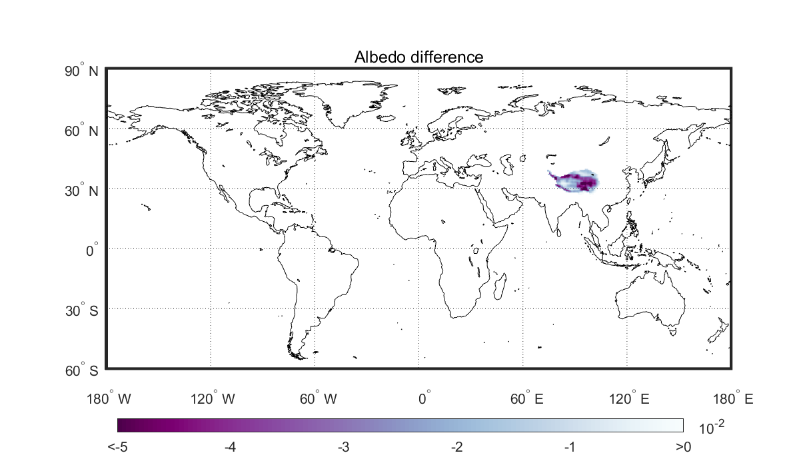
补充图1 ｜ LMDZOR中情景（SCE）与控制（CTL）试验之间强迫反照率差异的空间分布。反照率差异为RCP8.5情景下CMIP5全球气候模式（GCM）地表反照率加权平均值在本世纪末（2080-2100 CE）与2003-2018 CE期间之间的变化，且仅存在于青藏高原（TP）。更多细节见正文方法部分的"试验设计"小节以及下文"反照率评估"小节。
Supplementary Figure 1. The spatial pattern of forced albedo differences between scenario (SCE) and control (CTL) experiments in LMDZOR. The albedo differences are the changes in the weighted average of surface albedo from CMIP5 global climate models (GCMs) between the end of this century (2080-2100 CE) and the period 2003-2018 CE under the RCP8.5 scenario, and are only in the Tibetan Plateau (TP). More details are shown in the Experimental design section of the Methods, and the Albedo evaluation subsection below.
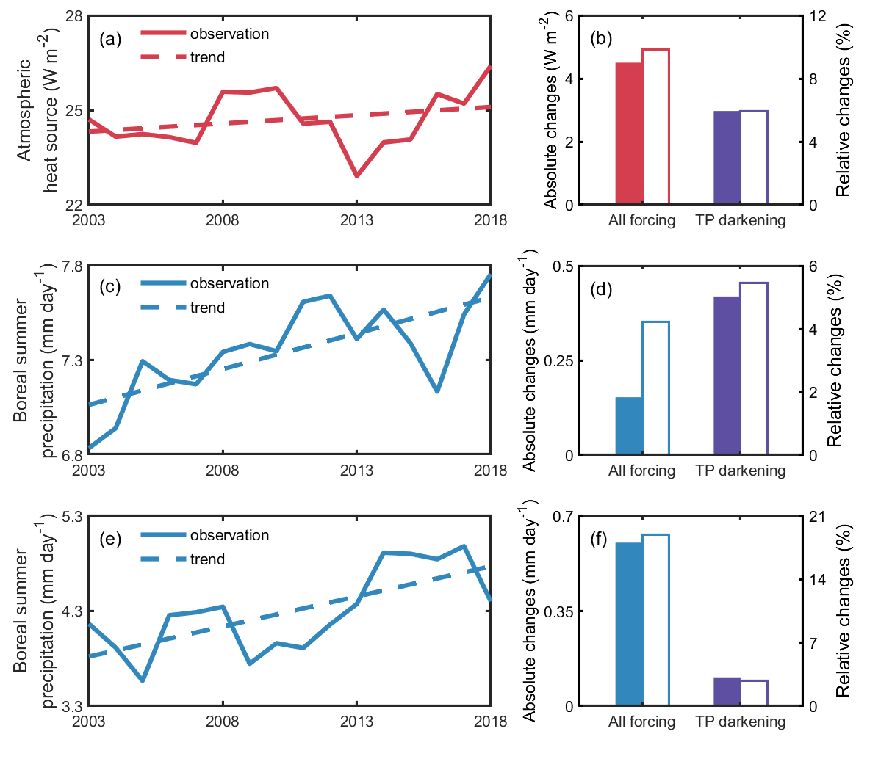
补充图2 ｜ （a-b）青藏高原（TP）大气热源的变化、（c-d）印度次大陆季风核心区北半球夏季降水的变化，以及（e-f）华南与华北之间北半球夏季降水差值的变化。左列各图为2003-2018 CE期间这些变量的变化，包括观测及其趋势。右列各图为这些变量的未来预估变化（全强迫，位于其左部）和反照率引起的变化（TP变暗，位于其左部〔原文如此；两处均作“左部”，疑第二处应为“右部”——译者注〕）。未来预估变化表示RCP8.5情景下CMIP5全球气候模式（GCM）预估的加权平均值在本世纪末（2080-2100 CE）与2003-2018 CE期间之间的差值，而反照率引起的变化按SCE与CTL最后80年平均输出之差计算（见方法部分）。实心柱和空心柱分别表示绝对变化和相对变化。相对变化指相对于背景气候态的绝对变化。
Supplementary Figure 2. Changes of (a-b) the atmospheric heat source over the Tibetan Plateau (TP), (c-d) the boreal summer precipitation over the Indian subcontinent core monsoon region, and (e-f) its difference between South China and North China. Panels in the left column are the changes of these variables, including the observation and its trend, during the period 2003-2018 CE. Panels in the right column are the future projected (all forcing, on its left part) and albedo-induced (TP darkening, on its left part) changes of these variables. The future projected changes indicate the difference in the weighted average of CMIP5 global climate models (GCMs) projection between the end of this century (2080-2100 CE) and the period 2003-2018 CE under the RCP8.5 scenario, while the albedo-induced changes are calculated as the difference of the final 80-year averaged outputs between SCE and CTL (see Methods). The filled and unfilled bars indicate absolute and relative changes, respectively. The relative changes refer to the absolute changes relative to the background climatology.
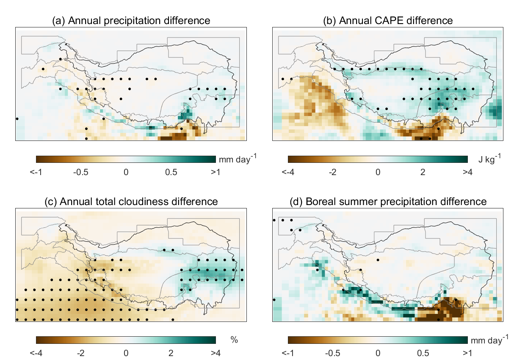
补充图3 ｜ 青藏高原（TP）及其周边山地反照率引起的（a）年降水、（b）年平均对流有效位能（CAPE）、（c）年平均云量和（d）北半球夏季（5月至9月）降水变化的空间分布。黑线为TP边界。灰线为伦道夫冰川编目第6版（RGI v6）¹˒²定义的13个二级分区的边界。有关这些分区的更多细节见补充表1。打点表示差异显著（p<0.05，非参数Wilcoxon符号秩检验）。
Supplementary Figure 3. Spatial patterns of albedo-induced changes of (a) annual precipitation, (b) annual mean convective available potential energy (CAPE), (c) annual mean cloudiness, and (d) boreal summer (from May to September) precipitation in the Tibetan Plateau (TP) and its surrounding ranges. The black line indicates the boundary of TP. The grey lines indicate the boundaries of the 13 second-order regions defined by the Randolph Glacier Inventory version 6 (RGI v6) 1, 2. More details about these regions are shown in Supplementary Table 1. The stippling indicates a significant difference (p<0.05, non-parametric Wilcoxon signed-rank test).
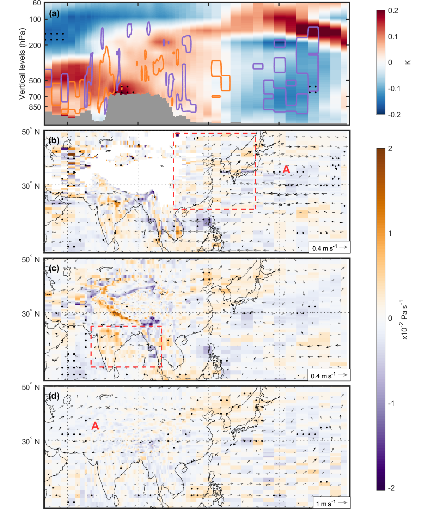
补充图4 ｜ 反照率引起的北半球夏季（a）沿32.5°N的气温和垂直风变化，以及（b）850hPa、（c）500hPa和（d）200hPa上反照率引起的水平和垂直风变化的空间分布。打点和黑色箭头表示差异显著（p<0.05，非参数Wilcoxon符号秩检验）。在图a中，无气温数据的区域（因地形导致的nan值）被视为陆地并遮盖为灰色。橙色（紫色）等值线为向上（向下）垂直风大于2.5（小于−2.5）×10⁻³ Pa s⁻¹的区域。在图b和图d中，符号"A"表示反气旋环流异常的中心。在图b和图c中，东亚（21-49°N，105-140°E）和南亚（10-25°N，70-100°E）的边界分别以红色虚线标出。
Supplementary Figure 4. The albedo-induced boreal summer (a) air temperature and vertical wind changes along the 32.5°N, and spatial patterns of albedo-induced horizontal and vertical winds changes at (b) 850hPa, (c) 500hPa, and (d) 200hPa. The stippling and black arrow indicate a significant difference (p<0.05, non-parametric Wilcoxon signed-rank test). In panel a, regions without the air temperature (nan value due to the topography) are regarded as the land and masked as grey. The orange (purple) contours are the regions where the upward (downward) vertical winds are larger than 2.5 (lower than -2.5) ×10-3 Pa s-1. In panels b and d, the symbol "A" indicates the center of the anticyclone circulation anomaly. The boundaries of East Asia (21-49°N, 105-140°E) and South Asia (10-25°N, 70-100°E) are highlighted by red dashed lines in panels b and c, respectively.
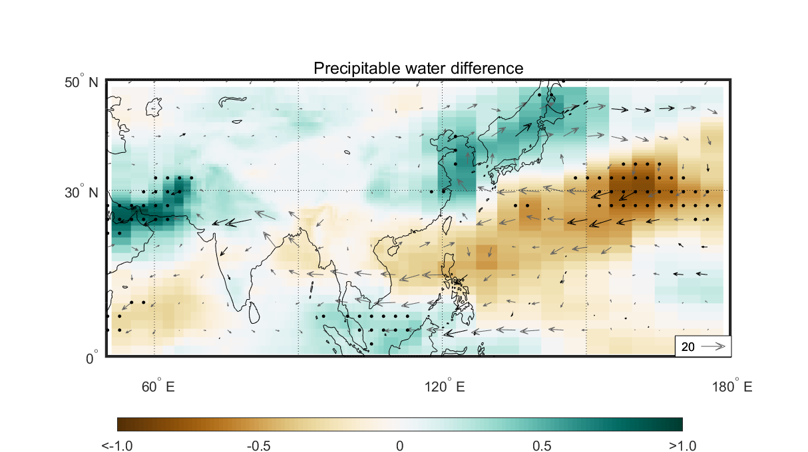
补充图5 ｜ 反照率引起的北半球夏季水汽输送（箭头）和整层大气可降水量（阴影）变化的空间分布。打点和黑色箭头表示差异显著（p<0.05，非参数Wilcoxon符号秩检验）。
Supplementary Figure 5. The spatial pattern of albedo-induced boreal summer humidity transport (arrow) and precipitable water in the whole atmosphere (shaded) changes. The stippling and black arrow indicate a significant difference (p<0.05, non-parametric Wilcoxon signed-rank test).
| 一级分区 | 二级分区 | 冰川数量 | 二级分区冰川总数 | 冰川覆盖面积 | 二级分区冰川覆盖总面积 |
|---|---|---|---|---|---|
| 中亚（13） | 吉萨尔-阿赖（13-01） | 3,147 | 39,227 | 1,846 km² | 36,917 km² |
| 帕米尔（Safed Khirs/西塔里木）（13-02） | 10,158 | 10,234 km² | |||
| 西昆仑（13-05） | 5,338 | 8,153 km² | |||
| 东昆仑（阿尔金山）（13-06） | 3,502 | 3,251 km² | |||
| 祁连山（13-07） | 2,720 | 1,637 km² | |||
| 西藏内部（13-08） | 9,320 | 7,923 km² | |||
| 西藏南部与东部（13-09） | 5,042 | 3,873 km² | |||
| 南亚（西）（14） | 兴都库什（14-01） | 4,316 | 27,687 | 2,938 km² | 33,568 km² |
| 喀喇昆仑（14-02） | 13,686 | 22,862 km² | |||
| 西喜马拉雅（14-03） | 9,685 | 7,768 km² | |||
| 南亚（东）（15） | 中喜马拉雅（15-01） | 4,454 | 12,836 | 5,447 km² | 14,734 km² |
| 东喜马拉雅（15-02） | 4,094 | 4,904 km² | |||
| 横断山（15-03） | 4,286 | 4,383 km² | |||
| First-order region | Second-order region | Number of glaciers | Total number of glaciers in second-order regions | Glacierized area | Total glacierized area in second-order regions |
|---|---|---|---|---|---|
| Central Asia (13) | Hissar Alay (13-01) | 3,147 | 39,227 | 1,846 km2 | 36,917 km2 |
| Pamir (Safed Khirs/W Tarim) (13-02) | 10,158 | 10,234 km2 | |||
| W Kun Lun (13-05) | 5,338 | 8,153 km2 | |||
| E Kun Lun (Altyn Tagh) (13-06) | 3,502 | 3,251 km2 | |||
| Qilian Shan (13-07) | 2,720 | 1,637 km2 | |||
| Inner Tibet (13-08) | 9,320 | 7,923 km2 | |||
| S and E Tibet (13-09) | 5,042 | 3,873 km2 | |||
| South Asia (West) (14) | Hindu Kush (14-01) | 4,316 | 27,687 | 2,938 km2 | 33,568 km2 |
| Karakoram (14-02) | 13,686 | 22,862 km2 | |||
| W Himalaya (14-03) | 9,685 | 7,768 km2 | |||
| South Asia (East) (15) | C Himalaya (15-01) | 4,454 | 12,836 | 5,447 km2 | 14,734 km2 |
| E Himalaya (15-02) | 4,094 | 4,904 km2 | |||
| Hengduan Shan (15-03) | 4,286 | 4,383 km2 | |||
补充表1 ｜ 本研究冰川分析中青藏高原（TP）及其周边山地13个二级分区（由RGI v6定义，见文献1、2）的详细信息。
Supplementary Table 1. Details about the 13 second-order regions (defined by the RGI v6, see refs 1, 2) in the Tibetan Plateau (TP) and its surrounding ranges for the glacier analysis in this study.
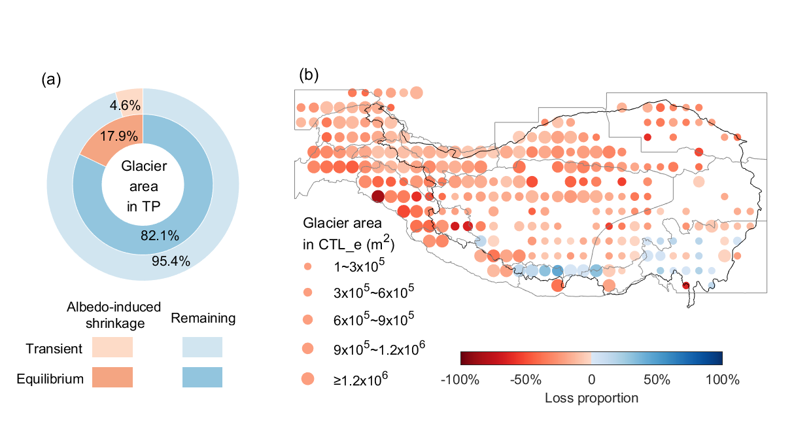
补充图6 ｜ 青藏高原（TP）及其周边山地反照率引起的冰川面积退缩。（a）百年尺度（外环，来自瞬态模拟）和平衡态（内环，来自平衡态模拟）反照率引起的冰川面积退缩比例与剩余比例。（b）CTL_e中平衡态冰川面积的空间分布及SCE_e相对于CTL_e的损失比例。损失比例按SCE_e与CTL_e最后1000年冰川面积之差除以CTL_e的相应值计算。黑线为TP边界。灰线为RGI v6¹˒²定义的13个二级分区的边界。有关这些分区的更多细节见补充表1。每个圆圈的大小代表CTL_e中1°空间分辨率上的平衡态冰川面积，而每个圆圈的颜色代表平衡态下SCE_e相对于CTL_e的冰川面积平均损失比例。冰川面积已基于模拟良好的冰川与所有冰川之间原始冰川面积（源自RGI v6¹˒²）的比值进行了升尺度换算（见方法部分）。
Supplementary Figure 6. The albedo-induced shrinkage of glacier area in the Tibetan Plateau (TP) and its surrounding ranges. (a) The proportion of albedo-induced shrinkage of glacier area and the remaining one on the centennial scale (outer ring, from the transient simulations) and at the equilibrium state (inner ring, from the equilibrium simulations). (b) The spatial pattern of equilibrium-state glacier area in CTL_e and its loss proportion of SCE_e relative to CTL_e. The loss proportion is computed as the difference between the final 1000-year glacier area of SCE_e and CTL_e divided by that of CTL_e. The black line indicates the boundary of TP. The grey lines indicate the boundaries of the 13 second-order regions defined by the RGI v6 1, 2. More details about these regions are shown in Supplementary Table 1. The size of each circle represents the equilibrium-state glacier area at a spatial resolution of 1° in CTL_e, while the color of each circle represents the mean loss proportion of glacier area in SCE_e relative to CTL_e under the equilibrium state. The glacier area has been upscaled based on the ratio of the original glacier area (derived from RGI v6 1, 2) between the well-simulated glaciers and all glaciers (see Methods).
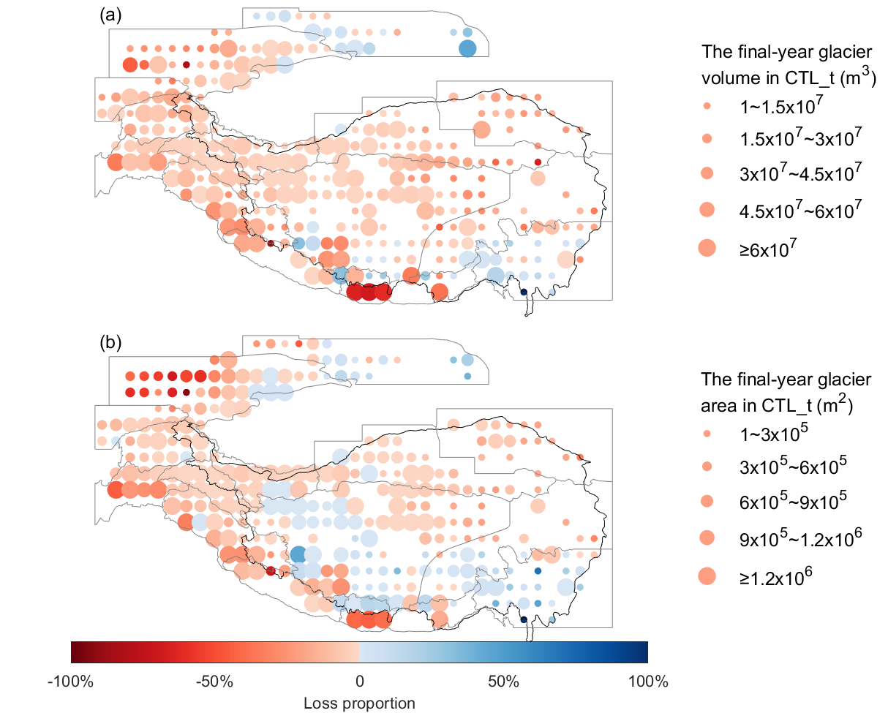
补充图7 ｜ 地表变暗导致的中亚和南亚百年尺度冰川（a）体积和（b）面积退缩。灰线为RGI v6¹˒²定义的中亚和南亚15个二级分区（一级分区13-15）的边界。黑线为TP边界。每个圆圈的大小代表CTL_t中1°空间分辨率上的末年冰川属性（体积或面积），而每个圆圈的颜色代表冰川属性的平均损失比例。损失比例按SCE_t与CTL_t末年冰川属性之差除以CTL_t的相应值计算。冰川体积已基于OGGM第一年模拟值与文献3估计值的比例进行了升尺度换算，而冰川面积已基于模拟良好的冰川与所有冰川之间原始冰川面积（源自RGI v6¹˒²）的比值进行了升尺度换算（见方法部分）。
Supplementary Figure 7. The centennial-scale shrinkage of glacier (a) volume and (b) area over Central and South Asia due to the surface darkening. The grey lines indicate the boundaries of the 15 second-order regions over Central and South Asia (first-order region 13-15) defined by the RGI v6 1, 2. The black line indicates the boundary of TP. The size of each circle represents the final-year glacier properties (volume or area) at a spatial resolution of 1° in CTL_t, while the color of each circle represents the mean loss proportion of glacier properties. The loss proportion is computed as the difference between the final-year glacier properties of SCE_t and CTL_t divided by those of CTL_t. The glacier volume has been upscaled based on the ratio of the first-year simulations in OGGM and the estimated values from ref 3, while the glacier area has been upscaled based on the ratio of the original glacier area (derived from RGI v6 1, 2) between the well-simulated glaciers and all glaciers (see Methods).
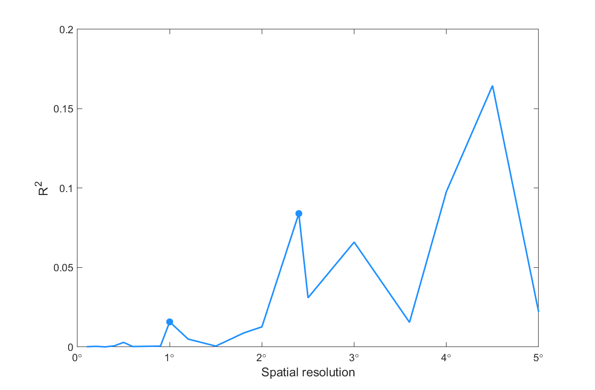
补充图8 ｜ 不同空间分辨率下青藏高原（TP）及其周边山地网格化反照率变化与平衡态冰川体积损失比例之间的关系。分析中仅选取含有冰川的格点。此处的关系指网格化反照率变化与平衡态冰川体积损失比例之间线性回归的R²统计量。损失比例按SCE_e与CTL_e最后1000年冰川体积之差除以CTL_e的相应值计算。此处的圆点表示该特定空间分辨率下的关系显著（p<0.05，Student's t检验）。
Supplementary Figure 8. Relationship between gridded albedo changes and equilibrium glacier volume loss proportion in the Tibetan Plateau (TP) and its surrounding ranges under different spatial resolutions. Only grid points with glaciers are selected for analysis. The relationship here means the R2 statistic of the linear regression between gridded albedo changes and equilibrium glacier volume loss proportion. The loss proportion is computed as the difference between the final 1000-year glacier volume of SCE_e and CTL_e divided by that of CTL_e. The dots here mean the relationship at this specific spatial resolution is significant (p<0.05, Student's t test).
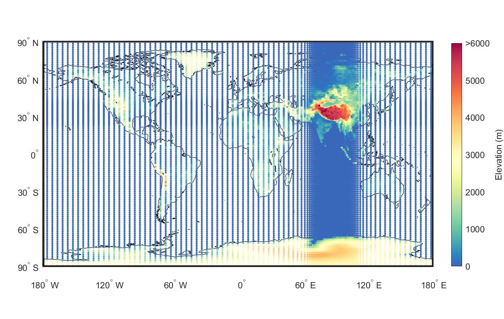
补充图9 ｜ LMDZOR中采用的不规则水平网格。点的位置代表网格中心的纬度和经度，而点的颜色代表网格的海拔高度。
Supplementary Figure 9. The irregular horizontal grid applied in LMDZOR. The location of points represents the center latitude and longitude of the grid while the color of points represents the elevation of the grid.
LMDZOR评估
LMDZOR evaluation
在本研究中，我们选择了五种不同的基于观测和再分析的数据集，通过年及北半球夏季水文变量和大气环流来验证LMDZOR的能力。
In this study, we chose five different observation-based and reanalysis datasets to verify the capacity of LMDZOR through the annual and boreal summer hydrological variables and atmospheric circulation.
这五种数据集包括：（I）气候研究单元网格化TS 4.04版（CRU TS 4.04， https://crudata.uea.ac.uk/cru/data/hrg/ ）⁴；（II）全球降水气候中心（GPCC， https://climatedataguide.ucar.edu/climate-data/gpcc-global-precipitation-climatology-centre ）的网格化台站分析产品⁵；（III）热带降雨测量任务（TRMM， https://disc.gsfc.nasa.gov/datasets?keywords=TRMM&page=1 ）多卫星降水分析⁶；（IV）ECMWF第五代再分析（ERA5， https://cds.climate.copernicus.eu/cdsapp#!/home ）⁷；以及（V）NCEP-DOE再分析2产品（NCEP， https://psl.noaa.gov/data/gridded/data.ncep.reanalysis2.html ）⁸。
The five datasets include (I) the Climatic Research Unit gridded TS version 4.04 (CRU TS 4.04, https://crudata.uea.ac.uk/cru/data/hrg/) 4, (II) the gridded gauge-analysis products in Global Precipitation Climatology Center (GPCC, https://climatedataguide.ucar.edu/climate-data/gpcc-global-precipitation-climatology-centre) 5, (III) the Tropical Rainfall Measuring Mission (TRMM, https://disc.gsfc.nasa.gov/datasets?keywords=TRMM&page=1) multi-satellite precipitation analyses 6, (IV) the fifth generation ECMWF reanalysis (ERA5, https://cds.climate.copernicus.eu/cdsapp#!/home) 7, and (V) the NCEP-DOE Reanalysis 2 products (NCEP, https://psl.noaa.gov/data/gridded/data.ncep.reanalysis2.html) 8.
我们将2003-2018 CE期间的平均降水（五种数据集中均有）和850hPa纬向/经向风（ERA5和NCEP中）与LMDZOR的CTL模拟进行了比较。
We compared the mean precipitation (in both five datasets) and 850hPa zonal/meridional wind (in ERA5 and NCEP) during 2003-2018 CE against the simulations of CTL in LMDZOR.
结果示于补充图10和11。
Results are shown in Supplementary Figures 10 and 11.
LMDZOR在模拟降水和850hPa纬向/经向风方面表现出相当好的能力（补充图10和11）。
LMDZOR shows relatively great capability in simulating the precipitation and 850hPa zonal/meridional wind (Supplementary Figures 10 and 11).
年降水（主要为北半球夏季降水，补充图11）在喜马拉雅山麓、西高止山脉（WG）、孟加拉湾（BOB）西海岸和海洋性大陆（MC）相对较多（补充图10）。
Annual precipitation, mainly during the boreal summer (Supplementary Figure 11), is relatively higher in the foothills of the Himalayas, the Western Ghats (WG), the west coast of the Bay of Bengal (BOB) and the Maritime Continent (MC) (Supplementary Figure 10).
五种数据集与CTL的结果一致。
Both the five datasets and CTL have consistent results.
在北半球夏季，ERA5、NCEP和CTL均显示出横跨阿拉伯海、印度次大陆和BOB的强西风（补充图11）。
In the boreal summer, ERA5, NCEP, and CTL all show strong westerly winds across the Arabian Sea, the Indian subcontinent, and the BOB (Supplementary Figure 11).
这些季风环流在南海上空进一步转向北。
These monsoonal winds further turn northward over the South China Sea.
此外，数据集和CTL均显示西太平洋上存在强大的西太平洋副热带高压（WPSH）。
Besides, both the datasets and CTL show a strong Western Pacific Subtropical High (WPSH) in the West Pacific.
然而，LMDZOR的CTL低估了中太平洋的年降水和北半球夏季降水，且CTL中模拟的WPSH位置偏北（补充图10和11）。
However, CTL in LMDZOR underestimates both the annual and the boreal summer precipitation in the Central Pacific, and the simulated WPSH in CTL is more northerly (Supplementary Figures 10 and 11).
CTL的这些偏差可能源于模式中缺少海洋模块。
The biases of CTL may be due to the lack of an ocean module in the model.
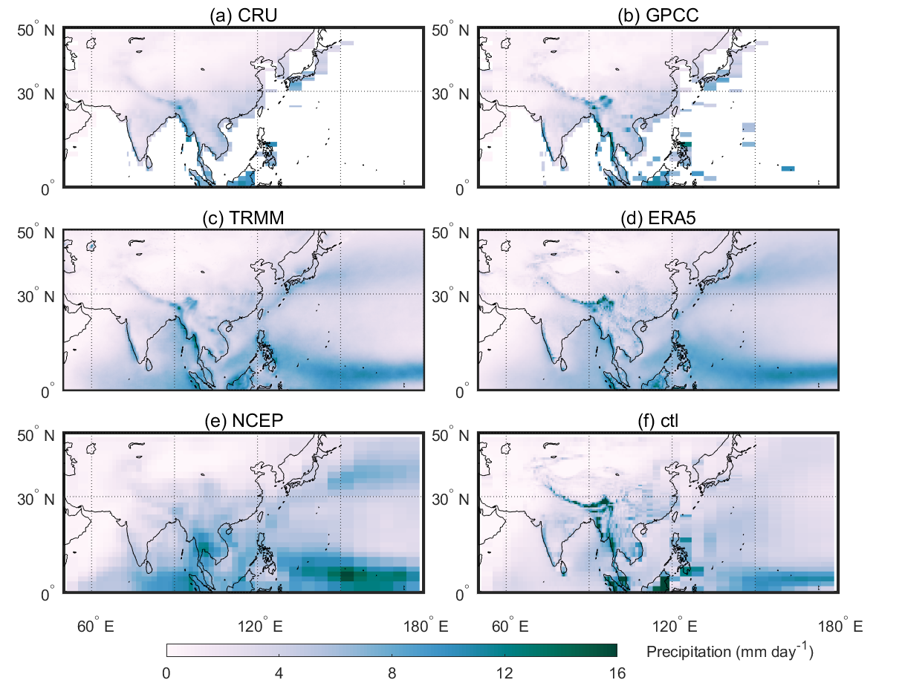
补充图10 ｜ 源自（a）CRU、（b）GPCC、（c）TRMM、（d）ERA5、（e）NCEP和（f）LMDZOR中CTL的东欧亚大陆年降水空间分布。图（a）和（b）中无降水值的区域遮盖为白色。
Supplementary Figure 10. Spatial patterns of annual precipitation over eastern Eurasia derived from (a) CRU, (b) GPCC, (c) TRMM, (d) ERA5, (e) NCEP, and (f) CTL in LMDZOR. Regions without precipitation values in panels (a) and (b) are masked as white.
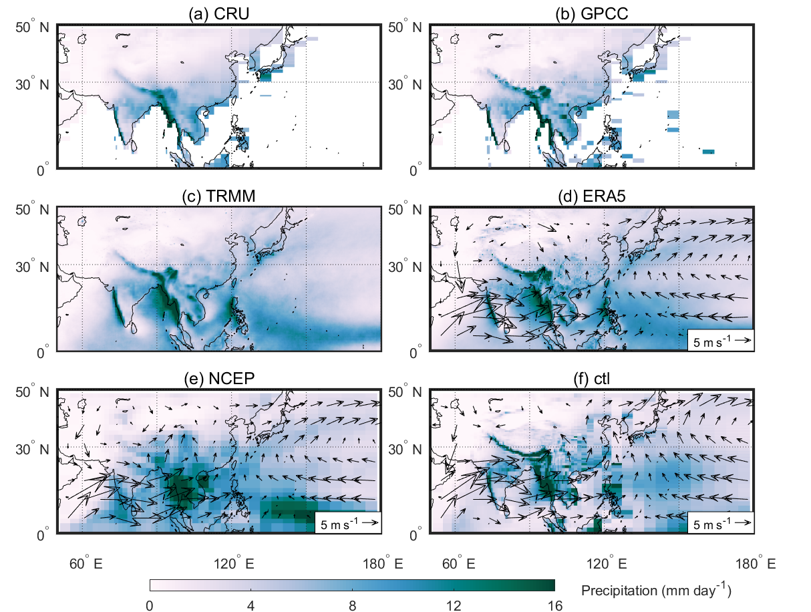
补充图11 ｜ 源自（a）CRU、（b）GPCC、（c）TRMM、（d）ERA5、（e）NCEP和（f）LMDZOR中CTL的东欧亚大陆北半球夏季降水和850hPa纬向/经向风空间分布。图（a）和（b）中无降水值的区域遮盖为白色。
Supplementary Figure 11. Spatial patterns of boreal summer precipitation and zonal/meridional wind at 850hPa over eastern Eurasia derived from (a) CRU, (b) GPCC, (c) TRMM, (d) ERA5, (e) NCEP, and (f) CTL in LMDZOR. Regions without precipitation values in panels (a) and (b) are masked as white.
OGGM评估
OGGM evaluation
为评估OGGM设置和参数的适用性，我们使用预处理的CRU气候数据⁹（见方法部分）代替LMDZOR试验的气候数据，模拟了2000-2016 CE期间TP及其周边山地的冰川。
To evaluate the suitability of the OGGM set-up and parameters, we simulated glaciers in the TP and its surrounding ranges over 2000-2016 CE using pre-processed CRU climate data 9 (see Methods) instead of the climate data from LMDZOR experiments.
该瞬态模拟中使用的设置和参数与正文中冰川模拟（CTL_t、SCE_t、CTL_e和SCE_e）的设置和参数相同。
The set-up and parameters used in this transient simulation are the same as those of glacier simulations in the manuscript (CTL_t, SCE_t, CTL_e, and SCE_e).
这一基于CRU的模拟显示，2000-2016 CE期间TP及其周边山地的冰川经历了可观的退缩，表现为冰川面积（−1.0%）和冰川体积（−5.2%）的损失比例（补充图12）。
This CRU-based simulation shows that glaciers over the TP and its surrounding ranges undergo a considerable shrinkage during 2000-2016 CE, which is manifested as the loss proportion of glacier area (-1.0%) and glacier volume (-5.2%) (Supplementary Figure 12).
空间上，2000-2016 CE期间的冰川退缩在TP东南部十分显著，如横断山（面积：−3.1%，体积：−18.1%）和高原东南部（面积：−4.1%，体积：−17.0%），其次是东喜马拉雅（面积：−2.9%，体积：−12.1%）和祁连山（面积：−2.4%，体积：−10.6%）。
Spatially, the glacier retreat over 2000-2016 CE is substantial in the southeast part of the TP, such as the Hengduan Shan (area: -3.1%, volume: -18.1%) and the southeast TP (area: -4.1%, volume: -17.0%), followed by the east Himalaya (area: -2.9%, volume: -12.1%) and the Qilian Shan (area: -2.4%, volume: -10.6%).
相比之下，在东昆仑（面积：0.8%，体积：−2.3%）、喀喇昆仑（面积：0.3%，体积：−1.1%）和西昆仑（面积：2.0%，体积：0.5%）等地区，冰川仅轻微退缩甚至前进（补充图12）。
By contrast, glaciers slightly retreat and even advance in regions such as the east Kun Lun (area: 0.8%, volume: -2.3%), the Karakoram (area: 0.3%, volume: -1.1%), and the west Kun Lun (area: 2.0%, volume: 0.5%) (Supplementary Figure 12).
OGGM模拟的冰川变化空间型态与以往基于卫星的研究（如文献10和文献11）相似，这些研究均显示横断山和高原东南部的冰川在退缩，而西昆仑和喀喇昆仑的冰川仅轻微退缩甚至前进。
The simulated spatial patterns of glacier changes in OGGM are similar to the previous satellite-based studies, such as ref 10 and ref 11, which all show shrinking glaciers in the Hengduan Shan and the southeast TP while glaciers in the west Kun Lun and the Karakoram only slightly retreat or even advance.
然而，与以往研究相比，OGGM部分低估了TP西南部冰川面积的减少。
However, compared to the previous studies, OGGM partly underestimates the decrease in glacier area in the southwest part of the TP.
我们进一步将2000-2016 CE期间的冰川厚度变化与文献12的结果进行了比较。
We further compared the glacier thickness changes over the period 2000-2016 CE to those in ref 12.
我们的结果表明，2000-2016 CE期间平均冰川厚度变化约为−0.38 ± 0.25 m yr⁻¹，略低于文献12的结果（−0.49 ± 0.31 m yr⁻¹）。
Our results show that the mean glacier thickness change over the period 2000-2016 CE is about -0.38 ± 0.25 m yr-1, which is slightly lower than that in ref 12 (-0.49 ± 0.31 m yr-1).
对于大多数冰川（88%），模式与数据差异的幅度小于0.45 m yr⁻¹（补充图13）。
For most of the glaciers (88%), the magnitude of the model-data difference is less than 0.45 m yr-1 (Supplementary Figure 13).
我们还评估了OGGM在模拟2000-2016 CE期间冰川面积加权平均平衡线高度（ELA）方面的表现（补充图14）。
We also evaluate the performance of OGGM in simulating the area-weighted average equilibrium-line altitude (ELA) of glaciers over 2000-2016 CE (Supplementary Figure 14).
我们的分析显示，2000-2016 CE期间基于CRU的模拟中面积加权平均ELA略高于文献13（90 ± 6 m）。
Our analysis shows that the area-weighted average ELA in CRU-based simulation over the period 2000-2016 CE is slightly higher than ref 13 (90 ± 6 m).
具体而言，OGGM高估了TP西部和中部的ELA，如西昆仑（210 m）、西喜马拉雅（201 m）和西藏内部（142 m）（补充图14）。
Specifically, OGGM overestimates ELA in the west and central part of the TP, such as the west Kun Lun (210 m), the west Himalaya (201 m), and the inner Tibet (142 m) (Supplementary Figure 14).
相比之下，OGGM部分低估了TP东南部的ELA，包括东喜马拉雅（−68 m）和横断山（−57 m）（补充图14）。
In contrast, OGGM partly underestimates ELA in the southeast part of the TP, including the east Himalaya (-68 m) and the Hengduan Shan (-57 m) (Supplementary Figure 14).
在中喜马拉雅（−5 m）以及TP西北部，如吉萨尔-阿赖（−21 m）和帕米尔（−20 m），2000-2016 CE期间基于CRU的模拟中的ELA与文献13的结果总体一致（补充图14）。
In the central Himalay (-5 m) and the northwest part of the TP, such as the Hissar Alay (-21 m) and the Pamir (-20 m), the ELA in CRU-based simulation over the period 2000-2016 CE is generally consistent with that in ref 13 (Supplementary Figure 14).
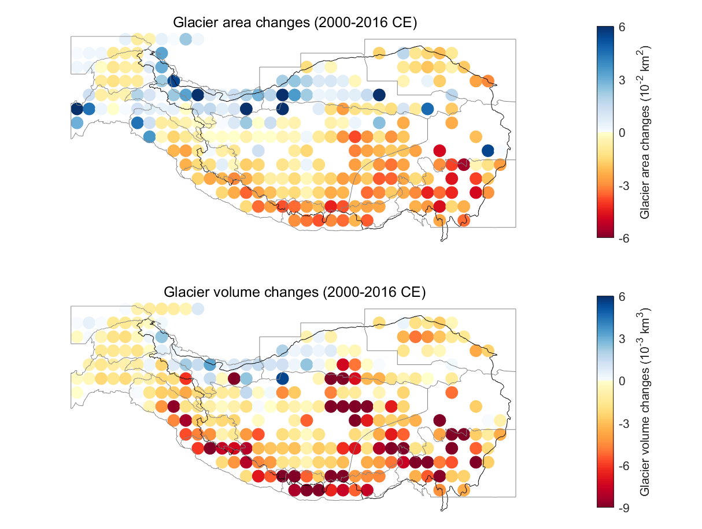
补充图12 ｜ OGGM模拟的2000-2016 CE期间冰川（a）面积和（b）体积平均变化的空间分布。黑线为青藏高原边界。灰线为RGI v6¹˒²定义的13个二级分区的边界。有关这些分区的更多细节见补充表1。每个圆圈的大小代表1°空间分辨率上2000-2016 CE期间的冰川变化。
Supplementary Figure 12. Spatial patterns of the average changes in glacier (a) area and (b) volume over 2000-2016 CE simulated with OGGM. The black line indicates the boundary of Tibetan Plateau. The grey lines indicate the boundaries of the 13 second-order regions defined by the RGI v6 1, 2. More details about these regions are shown in Supplementary Table 1. The size of each circle represents the glacier changes over 2000-2016 CE at a spatial resolution of 1°.
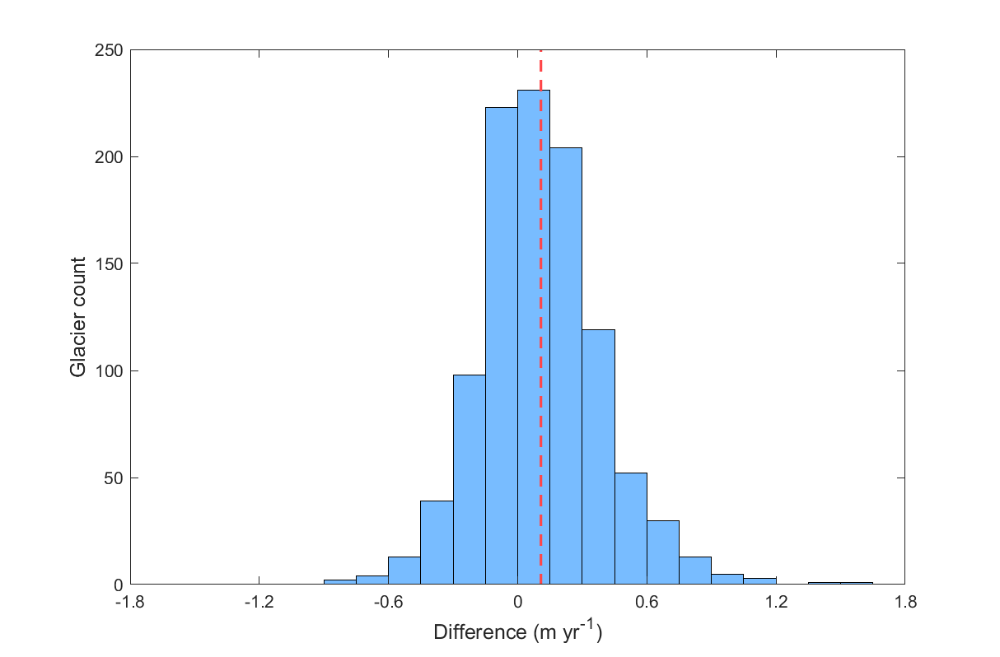
补充图13 ｜ 基于CRU的模拟与文献12之间2000-2016 CE期间冰川厚度变化的差异。红色虚线为基于CRU的模拟与文献12之间平均冰川厚度变化的差值。
Supplementary Figure 13. The difference in glacier thickness change over the period 2000-2016 CE between CRU-based simulation and ref 12. The red dashed line is the difference of mean glacier thickness change between CRU-based simulation and ref 12.
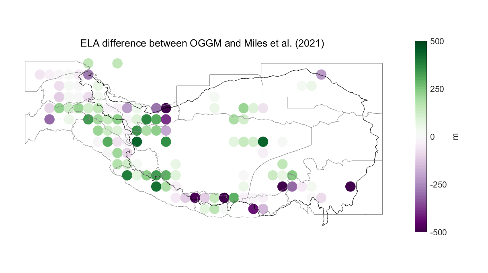
补充图14 ｜ 2000-2016 CE期间青藏高原（TP）及其周边山地OGGM与文献13之间冰川面积加权平均平衡线高度（ELA）差值的空间分布。黑线为TP边界。灰线为RGI v6¹˒²定义的13个二级分区的边界。有关这些分区的更多细节见补充表1。每个圆圈的大小代表1°空间分辨率上OGGM与文献13之间的ELA差值。
Supplementary Figure 14. Spatial pattern of the difference of area-weighted average equilibrium-line altitude (ELA) of glaciers between OGGM and ref 13 in the Tibetan Plateau (TP) and its surrounding ranges over the period 2000-2016 CE. The black line indicates the boundary of TP. The grey lines indicate the boundaries of the 13 second-order regions defined by the RGI v6 1, 2. More details about these regions are shown in Supplementary Table 1. The size of each circle represents the ELA difference between OGGM and ref 13 at a spatial resolution of 1°.
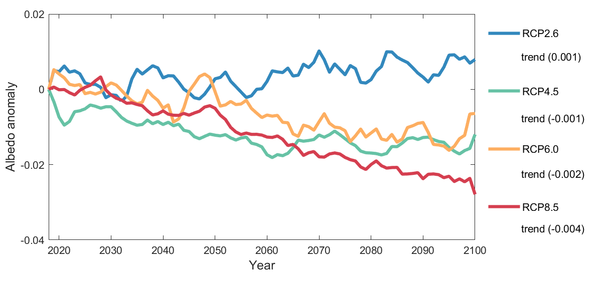
补充图15 ｜ 2018-2100 CE期间青藏高原（TP）地表反照率距平预估的时间序列。反照率距平为不同情景下CMIP5全球气候模式（GCM）加权平均得到的年均反照率5年滑动平均相对于其基准年（2018 CE）值的距平。蓝、绿、橙和红色线分别代表RCP2.6、RCP4.5、RCP6.0和RCP8.5情景下的TP地表反照率距平预估。趋势的单位为dec⁻¹。
Supplementary Figure 15. Time series of Tibetan Plateau (TP) surface albedo anomaly projection during 2018-2100 CE. The albedo anomalies are the 5-year moving average of the annual mean albedo derived from a weighted average of CMIP5 global climate models (GCMs) under different scenarios relative to its benchmark-year (2018 CE) value. The blue, green, orange, and red lines represent the TP surface albedo anomaly projection under the RCP2.6, RCP4.5, RCP6.0, and RCP8.5 scenarios, respectively. The unit of trend is dec-1.
反照率评估
Albedo evaluation
在本小节中，我们利用观测数据评估了历史（2003-2005 CE）和RCP8.5（2006-2018 CE）情景下35个合格CMIP5 GCM加权平均的TP地表反照率。
In this subsection, we utilized the observation to evaluate surface albedo in the TP from a weighted average of 35 eligible CMIP5 GCMs under the historical (2003-2005 CE) and RCP8.5 (2006-2018 CE) scenarios.
我们使用贝叶斯模型平均（BMA）为每个GCM分配模式权重（BMA的描述见方法部分）。
We used the Bayesian Model Averaging (BMA) to assign model weights for each GCM (see description of BMA in the Methods).
具体而言，给定来自GCM的反照率预估和来自中分辨率成像光谱仪（MODIS）MCD43产品的观测数据，基于以下方程获得2003-2018 CE期间反照率预估的加权预测概率密度函数（PDF）：
Specifically, given albedo projections from GCMs and the observed data from the Moderate Resolution Imaging Spectroradiometer (MODIS) MCD43 product, the weighted predicted probability density functions (PDFs) for albedo projections during 2003-2018 CE are obtained based on the following equation:
（1）
(1)
其中albi为第i个CMIP5 GCM模拟的反照率预估。wi是第i个GCM为最佳模式的后验概率，即第i个GCM的最优权重。N指GCM的数量。hi(alb | albi)表示给定第i个GCM为最佳模式时反照率预估的条件分布，并以均值为(ai + bialbi)、标准差为σ的正态分布PDF近似。BMA均值和方差分别计算为：
where albi is the albedo projection simulated by the ith CMIP5 GCM. wi, which is the posterior probability of ith GCM being the best model, is the optimal weight for the ith GCM. N refers to the number of GCMs. hi(alb | albi) denotes the conditional distribution of albedo projection given that the ith GCM is the best model, and is approximated by a PDF of normal distribution with mean (ai + bi albi) and standard deviation σ. The BMA mean and variance are respectively computed as:
（2）
(2)
（3）
(3)
BMA方法的成功实施需要估计ai、bi、wi和σ。ai和bi的值为偏差校正项，可简单地由观测反照率对albi的线性回归估计。通过假设模式误差在时间和空间上相互独立，方程（1）的对数似然函数为：
Successful implementation of the BMA method requires estimates of ai, bi, wi and σ. The values ai and bi are bias correction terms that are simply estimated from the linear regression of observed albedo on albi. Through assuming that model errors are independent across time and space, the log-likelihood function for Equation (1) is:
（4）
(4)
其中S为TP上网格单元的总数。hi(alb | albi,s)为在给定第i个GCM是该网格单元最佳模式的条件下，第s个网格上观测反照率对GCM预估的条件PDF。由于无法用解析解最大化该对数似然函数，我们采用迭代技术，通过马尔可夫链蒙特卡洛算法¹⁴估计权重和方差的最大似然值。
where S is the total number of grid cells over the TP. hi(alb | albi,s) is the conditional PDF of observed albedo on GCM projection at the sth grid given that the ith GCM is the best model for that grid cell. Since no analytical solutions can be used to maximize this log-likelihood function, we adopted iterative techniques to estimate the maximum likelihood values of weights and variance through a Markov chain Monte Carlo algorithm 14.
我们的结果表明，在2003-2018 CE期间，CMIP5 GCM的加权平均值与TP观测地表反照率相比仅有约0.020（相对于观测为8.6%）的轻微偏差（补充图16a）。
Our results show that the weighted average of CMIP5 GCMs has only slight biases by about 0.020 (8.6% compared with observation) compared with the observed surface albedo in the TP during the period 2003-2018 CE (Supplementary Figure 16a).
这些偏差可能源于模式预估在TP西部的高估（补充图16b）。
Such biases may originate from the overestimation of model projections in the western TP (Supplementary Figure 16b).
此外，CMIP5 GCM的加权平均值也能够正确刻画观测的地表反照率变化（模式：−0.005 dec⁻¹，p<0.05，Mann-Kendall检验；观测：−0.006 dec⁻¹，p=0.19）（补充图16a）。
Moreover, the weighted average of CMIP5 GCMs is also able to correctly capture observed surface albedo changes (model: -0.005 dec-1, p<0.05, Mann-Kendall test; observation: -0.006 dec-1, p=0.19) (Supplementary Figure 16a).
因此，CMIP5 GCM的加权平均值足以很好地表征TP地表反照率的变化。
Therefore, the weighted average of CMIP5 GCMs represents surface albedo changes over the TP sufficiently well.
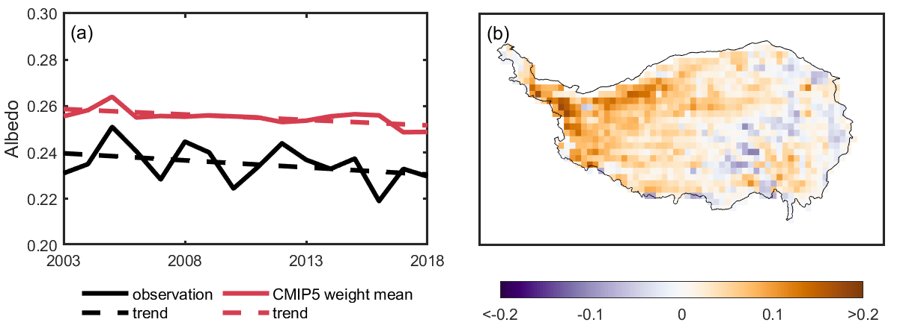
补充图16 ｜ 青藏高原（TP）地表反照率的变化以及模式预估与观测之间的差异。图a显示2003-2018 CE期间TP地表反照率的时间序列。粗实黑线代表来自MODIS MCD43产品的观测地表反照率（观测）。粗实红线为在历史（2003-2005 CE）和RCP8.5（2006-2018 CE）情景下运行的CMIP5全球气候模式（GCM）的加权平均值（CMIP5权重平均）。粗虚线为相应粗实线的趋势。图b表示2003-2018 CE期间历史+RCP8.5情景下CMIP5权重平均与观测之间TP地表反照率差异的空间分布。黑线为TP边界。
Supplementary Figure 16. Changes of surface albedo in the Tibetan Plateau (TP) and its difference between model projection and observation. Panel a shows the time series of TP surface albedo over 2003-2018 CE. The thick solid black line represents the observed surface albedo from the MODIS MCD43 product (observation). The thick solid red line is the weighted average of CMIP5 global climate models (GCMs) (CMIP5 weight mean) running under the historical (2003-2005 CE) and RCP8.5 (2006-2018 CE) scenarios. The thick dashed lines are the trend of the corresponding thick solid lines. Panel b indicates the spatial pattern of TP surface albedo difference between CMIP5 weight mean under the historical+RCP8.5 scenario and observation during 2003-2018 CE. The black line indicates the boundary of TP.
关于冰川模拟中冰川体积增加的解释
Explanation about glacier volume increasing in glacier simulations
在正文的冰川模拟（CTL_t、SCE_t、CTL_e和SCE_e）中，TP及其周边山地的冰川体积之和在瞬态模拟（百年尺度）中略有增加（相对于初始值为2.2%），并在平衡态模拟（平衡态）中进一步达到28.8%（相对于初始值）。
In the glacier simulations of the manuscript (CTL_t, SCE_t, CTL_e and SCE_e), the sum of glacier volume in the TP and its surrounding ranges slightly increases (2.2% relative to the initial value) in the transient simulation (centennial scale), which further reaches 28.8% (relative to the initial value) in the equilibrium simulation (equilibrium state).
空间上，冰川体积的增加主要发生在TP西部（补充图17），如兴都库什（瞬态模拟：49.4%，平衡态模拟：149.1%）、西昆仑（9.5%，82.6%）、东昆仑（−4.7%，68.0%）和帕米尔（13.3%，43.3%）。
Spatially, the increase of glacier volume mainly occurs in the west part of the TP (Supplementary Figure 17), such as the Hindu Kush (transient simulation: 49.4%, equilibrium simulation: 149.1%), the west Kun Lun (9.5%, 82.6%), the east Kun Lun (-4.7%, 68.0%) and the Pamir (13.3%, 43.3%).
由于OGGM的设置已经过评估（见上文"OGGM评估"小节），冰川体积增加的现象并不损害我们的研究，因为本研究关注的是控制试验与情景试验之间冰川的差异。
Since the set-up of OGGM has been evaluated (see OGGM evaluation subsection above), the phenomenon of the increasing glacier volume does not harm our study, which focuses on the difference of glaciers between the control and the scenario simulations.
以下是对这一现象背后可能原因的解释：
Following is the explanation of the possible reasons behind this phenomenon:
1）以往研究¹⁵˒¹⁶˒¹⁷发现，近年来高亚洲（HMA）西部的冰川相对于世界上大多数冰川表现出异常小的变化，这一现象被称为"喀喇昆仑异常"。近几十年来适宜的气候条件使该区域的冰川物质平衡呈正趋势，这可能促成了"喀喇昆仑异常"¹⁸。由于LMDZOR试验的边界条件源自2003-2018 CE期间的产品（见方法部分），且这些试验的气候输出被用于驱动OGGM，如果该时期的气候也适宜冰川前进，那么"喀喇昆仑异常"可能也存在于我们的模拟中。与气候态条件相比，该时期（2003-2018 CE）TP西部部分地区的降水呈现正距平（兴都库什：1.82 mm month⁻¹；西昆仑：0.46 mm month⁻¹；东昆仑：0.60 mm month⁻¹；帕米尔：1.37 mm month⁻¹）（补充图18）。因此，在CRU模拟（2000-2016 CE期间的模拟冰川，见上文"OGGM评估"小节）中体积增加的这些冰川中，约93.1%（81.7%）将在瞬态（平衡态）模拟中继续增加（补充表2），这并不令人意外。冰川模拟中冰川体积的增加可能部分归因于"喀喇昆仑异常"。
1) Previous studies 15, 16, 17 have found that glaciers in the west part of the High Mountain Asia (HMA) exhibited exceptionally little change relative to most of the world's glaciers in recent years, and this phenomenon is known as the "Karakoram Anomaly". The suitable climate conditions in recent decades have led to the positive trends of glacier mass balance over this region, which may contribute to the "Karakoram Anomaly" 18. Since the boundary conditions in LMDZOR experiments are derived from the products during 2003-2018 CE (see Methods) and the climate output of these experiments is used to drive OGGM, if the climate over this period is also suitable for advancing glaciers, the "Karakoram Anomaly" may exist in our simulations as well. Precipitation over this period (2003-2018 CE) shows an increased anomaly in some regions of the west part of the TP (Hindu Kush: 1.82 mm month-1; west Kun Lun: 0.46 mm month-1, east Kun Lun: 0.60 mm month-1, Pamir: 1.37 mm month-1) compared with the climatology condition (Supplementary Figure 18). Therefore, it is not surprising that about 93.1% (81.7%) of these glaciers with increased volume in CRU simulation (simulated glaciers over the period 2000-2016 CE, see OGGM evaluation subsection above) will continue to increase in the transient (equilibrium) simulations (Supplementary Table 2). Glacier volume increases in glacier simulations may be partly due to the "Karakoram Anomaly".
2）在预处理过程中，首先计算LMDZOR前16年气候数据与预处理CRU气候数据在参考气候期内的差值或比值。然后，将两组气候数据之间的delta（差值或比值）应用于LMDZOR其余83年的结果，以获得OGGM冰川模拟的气候强迫（见方法部分）。与LMDZOR前16年的气候数据相比，TP西部最后83年的温度保持稳定（兴都库什：0.02 K；西昆仑：0.03 K；东昆仑：0.05 K；帕米尔：0.03 K），而TP西部最后83年的降水则高得多（兴都库什：1.04 mm month⁻¹；西昆仑：0.44 mm month⁻¹；东昆仑：0.18 mm month⁻¹；帕米尔：0.86 mm month⁻¹）（补充图19）。因此，与LMDZOR前16年的气候相比，LMDZOR最后83年的气候更适宜TP西部的冰川。后一点或可解释冰川模拟中其余体积增加的冰川。
2) During the pre-processing procedure, the difference or ratio between the first 16-year climate data in LMDZOR and the pre-processed CRU climate data over the reference climate period is first computed. Then, the deltas (difference or ratio) between two climate data are applied to the rest 83-year results of LMDZOR to obtain the climate forcing of OGGM glacier simulations (see Methods). Compared with the first 16-year climate data in LMDZOR, the final 83-year temperature in the west part of the TP remains stable (Hindu Kush: 0.02 K; west Kun Lun: 0.03 K, east Kun Lun: 0.05 K, Pamir: 0.03 K), while the final 83-year precipitation in the west part of the TP is much higher (Hindu Kush: 1.04 mm month-1; west Kun Lun: 0.44 mm month-1, east Kun Lun: 0.18 mm month-1, Pamir: 0.86 mm month-1) (Supplementary Figure 19). Therefore, the final 83-year climate in LMDZOR is more suitable for glaciers in the west part of the TP compared with the climate of LMDZOR in the first 16 years. The latter point may explain the rest part of glaciers with increased volume in glacier simulations.
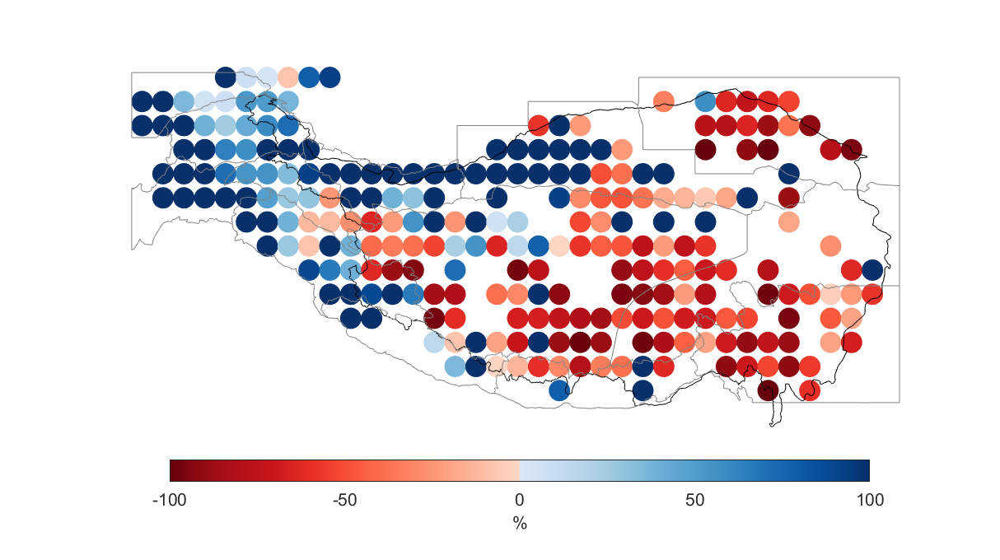
补充图17 ｜ 平衡态与初始值之间冰川体积差异比例的空间分布。此处的比例指CTL_e最后1000年平均冰川体积除以初始状态下的冰川体积。黑线为青藏高原边界。灰线为RGI v6¹˒²定义的13个二级分区的边界。有关这些分区的更多细节见补充表1。每个圆圈的大小代表1°空间分辨率上冰川体积差异的比例。
Supplementary Figure 17. The spatial pattern of the proportion of glacier volume difference between the equilibrium-state and initial value. The proportion here indicates the glacier volume of CTL_e averaged over the final 1000 years divided by that in the initial state. The black line indicates the boundary of Tibetan Plateau. The grey lines indicate the boundaries of the 13 second-order regions defined by the RGI v6 1, 2. More details about these regions are shown in Supplementary Table 1. The size of each circle represents the proportion of glacier volume difference at a spatial resolution of 1°.
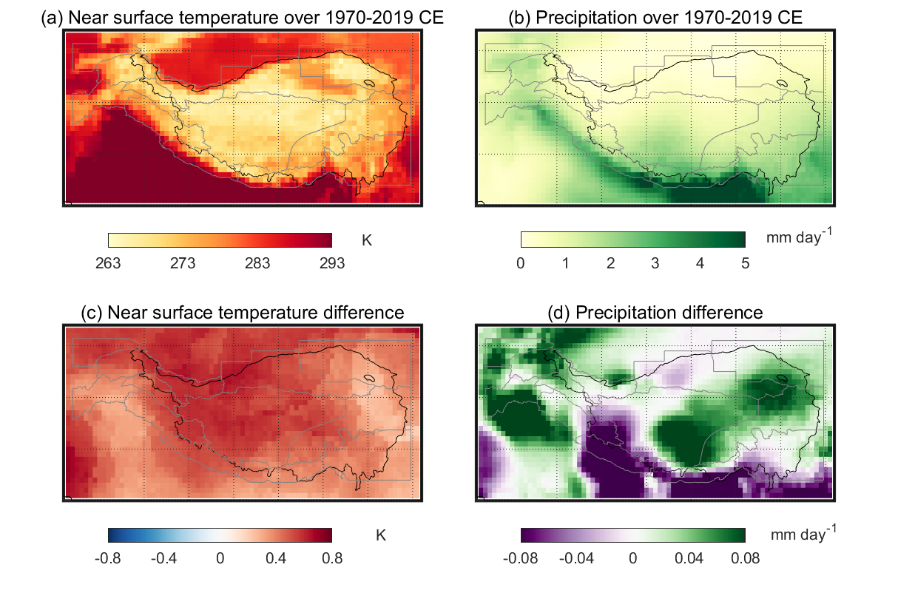
补充图18 ｜ 1970-2019 CE期间的气候（图a和b）及其与2003-2018 CE期间气候的差值（图c和d）的空间分布。气候数据——包括近地表气温（图a和c）和降水（图b和d）——源自CRU TS。下排两个时间段之间的气候差异按2003-2018 CE期间的气候减去1970-2019 CE期间的气候计算。黑线为青藏高原边界。灰线为RGI v6¹˒²定义的13个二级分区的边界。有关这些分区的更多细节见补充表1。
Supplementary Figure 18. Spatial patterns of the climate over the period 1970-2019 CE (panels a and b), and its difference to the climate over the period 2003-2018 CE (panels c and d). The climate data, including near-surface air temperature (panels a and c) and precipitation (panels b and d), is derived from CRU TS. The climate difference between two time periods in the lower row is computed as the difference between the climate over the period 2003-2018 CE and that over the period 1970-2019 CE. The black line indicates the boundary of Tibetan Plateau. The grey lines indicate the boundaries of the 13 second-order regions defined by the RGI v6 1, 2. More details about these regions are shown in Supplementary Table 1.
补充表2 ｜ 不同冰川模拟中青藏高原（TP）及其周边山地上体积增加的冰川总数及其占冰川总数的比例。上表表示相应冰川的体积仅在一个冰川模拟中增加，下表表示相应冰川的体积在两个冰川模拟中均增加。
Supplementary Table 2. Total number of glaciers with increased volume and its proportion to the total number of glaciers over the Tibetan Plateau (TP) and its surrounding ranges in different glacier simulations. The upper table indicates the respective glaciers' volume increases only in one glacier simulation, while the lower table indicates the respective glaciers' volume increases in both glacier simulations.
| CRU模拟 | CTL_t | CTL_e |
|---|---|---|
| 25,591（25.4%） | 44,571（44.3%） | 42,412（42.1%） |
| CRU模拟 && CTL_t | CRU模拟 && CTL_e | CTL_t && CTL_e |
|---|---|---|
| 23,826（23.7%） | 20,907（20.8%） | 21,505（21.4%） |
| CRU simulation | CTL_t | CTL_e |
|---|---|---|
| 25,591 (25.4%) | 44,571 (44.3%) | 42,412 (42.1%) |
| CRU simulation && CTL_t | CRU simulation && CTL_e | CTL_t && CTL_e |
|---|---|---|
| 23,826 (23.7%) | 20,907 (20.8%) | 21,505 (21.4%) |
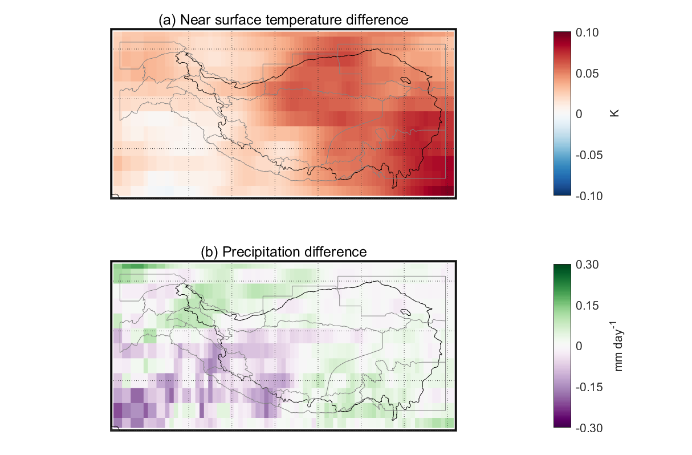
补充图19 ｜ LMDZOR试验中最后83年与最初16年气候之间差异的空间分布。气候数据——包括（a）近地表气温和（b）降水——源自LMDZOR的CTL。黑线为青藏高原边界。灰线为RGI v6¹˒²定义的13个二级分区的边界。有关这些分区的更多细节见补充表1。
Supplementary Figure 19. Spatial patterns of the difference between the final 83-year and first 16-year climate in LMDZOR experiments. The climate data, including (a) near-surface air temperature and (b) precipitation, is derived from CTL in LMDZOR. The black line indicates the boundary of Tibetan Plateau. The grey lines indicate the boundaries of the 13 second-order regions defined by the RGI v6 1, 2. More details about these regions are shown in Supplementary Table 1.
（补充参考文献共18条，按本工作流约定不在此翻译；请查阅原文补充材料获取完整文献列表。）
(The 18 supplementary references are not translated here per the workflow convention; please consult the original Supplementary Information for the full list.)